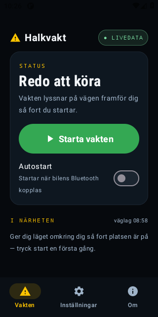
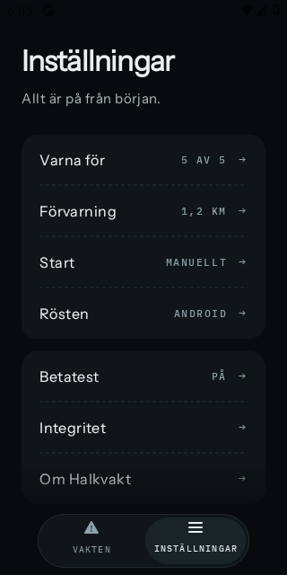
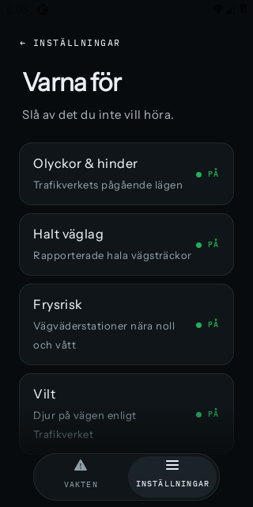
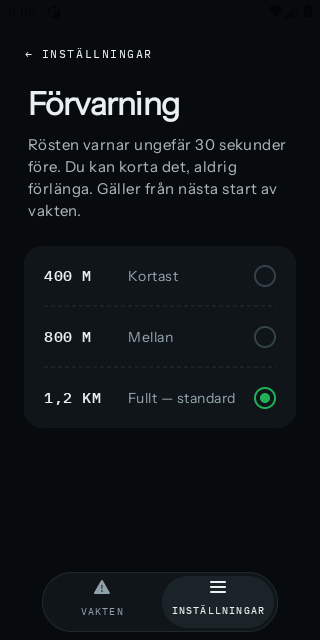
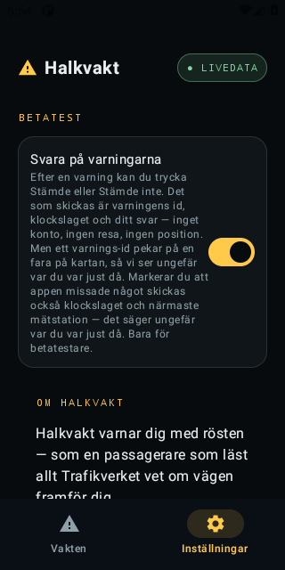
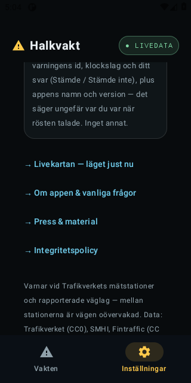

<title>Halkvaktens app</title>
<link rel="preconnect" href="https://fonts.googleapis.com">
<link rel="preconnect" href="https://fonts.gstatic.com" crossorigin>
<link rel="stylesheet" href="https://fonts.googleapis.com/css2?family=Instrument+Sans:wght@500;600;700&family=Source+Serif+4:ital,opsz,wght@0,8..60,400;0,8..60,600;1,8..60,400&family=JetBrains+Mono:wght@400;500&display=swap">
<style>
  /* Layout: the same paper sheet as Halkvaktens systembild and mätningar. A strip of real screens up top, then numbered
     sections that follow the user: what it says, the screens, starting, answering, what leaves the phone, where it stands. */
  :root {
    --papper: #F6F7F5;
    --blad: #FFFFFF;
    --black: #16202A;
    --dampad: #4A5763;
    --linje: #D9DFE3;
    --gul: #A8720A;
    --gul-yta: #FFF3D6;
    --gron: #1F7A45;
    --gron-yta: #E4F2EA;
    --rod: #A63A2A;
    --rod-yta: #F9E7E3;
    --frost-yta: #E6F0F5;
    --skarm: #0B1014;
    color-scheme: light;
  }
  @media (prefers-color-scheme: dark) {
    :root:not([data-theme="light"]) {
      --papper: #0B1014; --blad: #121A20; --black: #E6ECEF; --dampad: #9DAAB3; --linje: #26323B;
      --gul: #FFC94A; --gul-yta: #2A2310; --gron: #4CC382; --gron-yta: #12261B; --rod: #F08A7A; --rod-yta: #2B1714;
      --frost-yta: #13232C; --skarm: #05080A;
      color-scheme: dark;
    }
  }
  :root[data-theme="dark"] {
    --papper: #0B1014; --blad: #121A20; --black: #E6ECEF; --dampad: #9DAAB3; --linje: #26323B;
    --gul: #FFC94A; --gul-yta: #2A2310; --gron: #4CC382; --gron-yta: #12261B; --rod: #F08A7A; --rod-yta: #2B1714;
    --frost-yta: #13232C; --skarm: #05080A;
    color-scheme: dark;
  }
  body { background: var(--papper); color: var(--black); padding-inline: 16px; padding-block: 28px 48px;
         font: 400 16px/1.6 "Source Serif 4", Georgia, "Times New Roman", serif; }
  .blad { max-width: 820px; margin: 0 auto; background: var(--blad); border: 1px solid var(--linje);
          padding: clamp(20px, 5vw, 56px); display: grid; grid-template-columns: minmax(0, 1fr); gap: 22px; }
  h1, h2, h3, .etikett, th, .dom, .fakta b, figcaption b, .steg b, .rost-fras { font-family: "Instrument Sans", "Helvetica Neue", Arial, sans-serif; }
  h1 { font-size: clamp(30px, 5vw, 42px); line-height: 1.08; font-weight: 700; margin: 0; letter-spacing: -0.01em; text-wrap: balance; }
  h2 { font-size: 21px; font-weight: 700; margin: 18px 0 0; text-wrap: balance; }
  h3 { font-size: 16px; font-weight: 600; margin: 6px 0 0; }
  p { margin: 0; max-width: 68ch; }
  .etikett { font-size: 12px; font-weight: 600; letter-spacing: 0.12em; text-transform: uppercase; color: var(--gul); }
  .ingress { font-size: 18px; color: var(--dampad); }
  .mono, code { font-family: "JetBrains Mono", ui-monospace, Menlo, monospace; font-size: 0.86em; font-variant-numeric: tabular-nums; }
  .litet { font-size: 14px; color: var(--dampad); }
  ul, ol { margin: 0; padding-left: 1.2em; display: grid; gap: 5px; }
  li { max-width: 66ch; }
  hr { border: 0; border-top: 1px solid var(--linje); margin: 4px 0; width: 100%; }
  q, .citat { font-style: italic; }

  .fakta { display: flex; flex-wrap: wrap; gap: 6px 22px; font-size: 14px; color: var(--dampad);
           border-top: 1px solid var(--linje); border-bottom: 1px solid var(--linje); padding-block: 10px; }
  .fakta b { color: var(--black); font-weight: 600; font-variant-numeric: tabular-nums; }

  .remsa { display: flex; gap: 14px; overflow-x: auto; padding-block: 4px 10px; scroll-snap-type: x mandatory; }
  .remsa figure { margin: 0; flex: 0 0 168px; display: grid; gap: 8px; scroll-snap-align: start; }
  .remsa img { width: 168px; aspect-ratio: 1 / 2; object-fit: cover; border-radius: 14px; background: var(--skarm);
               border: 1px solid var(--linje); display: block; max-width: 100%; }
  figcaption { font-size: 13px; line-height: 1.4; color: var(--dampad); }
  figcaption b { color: var(--black); font-weight: 600; }

  .tabell { overflow-x: auto; }
  table { border-collapse: collapse; width: 100%; font-size: 14px; }
  th, td { text-align: left; padding: 7px 10px; border-bottom: 1px solid var(--linje); vertical-align: top; }
  th { font-size: 12px; font-weight: 600; letter-spacing: 0.06em; text-transform: uppercase; color: var(--dampad); }
  td.tal, th.tal { text-align: right; font-variant-numeric: tabular-nums; white-space: nowrap; }
  td.nr { white-space: nowrap; font-family: "JetBrains Mono", ui-monospace, Menlo, monospace; font-size: 13px; }
  .rost-fras { font-weight: 600; }

  .steg { list-style: none; padding: 0; display: grid; gap: 0; counter-reset: s; }
  .steg li { counter-increment: s; display: grid; grid-template-columns: 30px 1fr; gap: 12px; padding-block: 9px;
             border-bottom: 1px solid var(--linje); max-width: none; }
  .steg li::before { content: counter(s); font: 600 13px "Instrument Sans", Arial, sans-serif; color: var(--blad);
                     background: var(--black); width: 24px; height: 24px; border-radius: 50%; display: grid; place-items: center; }
  .steg li > div { min-width: 0; }

  .par { display: grid; grid-template-columns: repeat(auto-fit, minmax(260px, 1fr)); gap: 18px 28px; }
  .par > * { min-width: 0; }
  .ruta { border-left: 3px solid var(--gul); padding: 4px 0 4px 14px; display: grid; gap: 6px; align-content: start; }
  .ruta.gron { border-left-color: var(--gron); }
  .ruta.rod { border-left-color: var(--rod); }
  .skickas { background: var(--frost-yta); padding: 14px 16px; border-radius: 4px; display: grid; gap: 8px; }

  .dom { display: inline-block; font-size: 11px; font-weight: 600; letter-spacing: 0.08em; text-transform: uppercase;
         padding: 1px 7px; border-radius: 3px; white-space: nowrap; }
  .dom.klar { color: var(--gron); background: var(--gron-yta); }
  .dom.fel { color: var(--rod); background: var(--rod-yta); }
  .dom.vantar { color: var(--gul); background: var(--gul-yta); }
  a { color: inherit; }
</style>

<main class="blad">
  <div class="etikett">Appen · 28 september 2026 · läst mot läget 7 oktober</div>
  <h1>Halkvakt i telefonen: vad den gör, säger och skickar</h1>
  <p class="ingress">Tredje sidan i serien efter systembilden och mätningarna. Den här sidan följer föraren: vad rösten säger, hur skärmarna ser ut, hur vakten startar och stannar, hur betatestarna svarar och exakt vad som lämnar telefonen. Underlaget är produktboken, systembeskrivningen, beslutsloggen och Skyltfondsansökan med bilagor.</p>
  <div class="fakta">
    <span>iPhone <b>0.3.11 (23)</b></span>
    <span>Android <b>0.3.11 (23)</b></span>
    <span><b>5</b> faror</span>
    <span><b>2</b> flikar</span>
    <span><b>0</b> konton</span>
    <span>batteri iPhone <b>7 %/h</b></span>
    <span>gratis, ännu bara hos testarna</span>
  </div>

  <div class="remsa" aria-label="Skärmbilder ur Android-appen i skinnet v4, 2 oktober 2026">
    <figure><figcaption><b>Redo.</b> För betatestare: svar på varningen och val för en miss.</figcaption></figure>
    <figure><figcaption><b>Inställningar.</b> En rad per ämne, varje rad öppnar en egen sida.</figcaption></figure>
    <figure><figcaption><b>Varna för.</b> Fem faror, var och en kan stängas av.</figcaption></figure>
    <figure><figcaption><b>Förvarning.</b> Kan kortas, aldrig förlängas.</figcaption></figure>
    <figure><figcaption><b>Betatest.</b> Av från början. Kvittot säger vad som skickas.</figcaption></figure>
    <figure><figcaption><b>Om.</b> Ärlighetsraden och källorna, ordagrant.</figcaption></figure>
  </div>
  <p class="litet">Android ur fotostudion 2/10 i skinnet v4 — designöverlämningen v2 (DECISIONS #444, kort #284), i 0.3.10 (22) och senare. iPhone har samma skärmar; bilderna kommer ur första bygget i Xcode.</p>

  <h2 id="avsnitt-1">1. Vad appen är</h2>
  <p>En app du startar när du sätter dig i bilen, och sedan lägger du undan telefonen. Halkvakt lyssnar på Trafikverkets mätstationer och rapporterade väglag och säger till med rösten, i högtalaren eller bilens Bluetooth, när något farligt finns framför dig: halka, frysrisk, olyckor, vilt och fartkameror. Det finns ingen skärm att titta på och inget konto. Tystnad är grundläget: pratar den, betyder det något.</p>

  <h2 id="avsnitt-2">2. En körning</h2>
<!-- LÄGESRADER §2: skrivs av scripts/projektkartan.ts ur docs/projektkartan.json, ändra inte för hand -->
<div style="display: grid; gap: 4px; margin: 2px 0 12px; font-size: 14px; line-height: 1.45">
  <div style="font: 600 11px/1.4 'Instrument Sans', Arial, sans-serif; letter-spacing: 0.08em; text-transform: uppercase; color: var(--dampad, #4A5763)">Läget i <a href="https://claude.ai/artifact/Bvo6pfdfhwEGjMxsR7xNc8">projektkartan</a></div>
  <details><summary style="cursor: pointer"><span aria-hidden="true" style="display: inline-block; width: 9px; height: 9px; border-radius: 50%; background: var(--gron, #1F7A45); margin-right: 6px"></span><a href="https://claude.ai/artifact/Bvo6pfdfhwEGjMxsR7xNc8#del-m-motorn">Motorn i tre språk</a> <span style="color: var(--dampad, #4A5763)">klar</span></summary>
    <ul style="margin: 4px 0 8px; padding-left: 1.6em; display: grid; gap: 2px; font-size: 13px; list-style: none">
      <li><span aria-hidden="true">✓</span> <b>Motorn i TypeScript</b> <span style="color: var(--dampad, #4A5763)">klart · engine/src/engine.ts (AlertEngine, 292 rader), types.ts, texts.ts, geo.ts; deterministisk utan I/O (engine.ts:1-17)</span></li>
      <li><span aria-hidden="true">✓</span> <b>Swift-port</b> <span style="color: var(--dampad, #4A5763)">klart · ios/HalkvaktEngine/Sources/HalkvaktEngine/Engine.swift (379 rader); appen länkar paketet (ios/HalkvaktApp/project.yml:9-17)</span></li>
      <li><span aria-hidden="true">✓</span> <b>Kotlin-port</b> <span style="color: var(--dampad, #4A5763)">klart · android/engine/src/main/kotlin/se/halkvakt/engine/Engine.kt och Types.kt; android/app/build.gradle.kts:42 project(':engine')</span></li>
      <li><span aria-hidden="true">✓</span> <b>Testfallen</b> <span style="color: var(--dampad, #4A5763)">klart · 37 vektorer v01–v37 i engine/vectors plus engine/fixtures/skane_vag108.json; engine/gen-vectors.ts vaktas i ci.yml</span></li>
      <li><span aria-hidden="true">✓</span> <b>Paritet i CI</b> <span style="color: var(--dampad, #4A5763)">klart · ci.yml npm test (test/engine.test.ts:19-20), ios-engine.yml swift test, android.yml :engine:test; step jämförs (#443)</span></li>
      <li><span aria-hidden="true">✓</span> <b>Lägesfilens läsare i alla tre</b> <span style="color: var(--dampad, #4A5763)">klart · TS test/lasarkontraktet.test.ts; Kotlin LasarkontraktetTest.kt i appens testmål, android 37129803970 grön, motprovet 37129845788 rött; Swift SnapshotReader i HalkvaktEngine, LasarkontraktetTests.swift, ios-engine 37129806868 grön, motprovet 37129843583 rött på &quot;&lt;null&gt;&quot; (kort #289) · Axel på Macen 4/10 11:11–11:13 (e48cb78): appen byggd i Xcode (Build Succeeded, iPhone 16e) och swift test i ios/HalkvaktEngine grönt på Apples Foundation, XCTest 13 fall 0 fel, Swift Testing LasarkontraktetTests godkänd</span></li>
    </ul>
  </details>
  <details><summary style="cursor: pointer"><span aria-hidden="true" style="display: inline-block; width: 9px; height: 9px; border-radius: 50%; background: var(--gul, #B35C00); margin-right: 6px"></span><a href="https://claude.ai/artifact/Bvo6pfdfhwEGjMxsR7xNc8#del-a-omladdning">Omladdningen under resan (iPhone)</a> <span style="color: var(--dampad, #4A5763)">delvis, 50 % · kvar: En resa på 45–60 min i (21) eller senare där klockslaget vid PÅ DIN VÄG flyttar sig (kort #258)</span></summary>
    <ul style="margin: 4px 0 8px; padding-left: 1.6em; display: grid; gap: 2px; font-size: 13px; list-style: none">
      <li><span aria-hidden="true">✓</span> <b>Byggd i koden</b> <span style="color: var(--dampad, #4A5763)">klart · GuardManager.swift:113 (30 min), :119–151 (refreshSnapshot); KorlageView.swift:67–71 (klockslaget, #434)</span></li>
      <li><span aria-hidden="true">✓</span> <b>I ett iPhone-bygge</b> <span style="color: var(--dampad, #4A5763)">klart · Kompilerad i (19) 1/10; (21) med klockslaget uppladdad till TestFlight 2/10 (DECISIONS #434)</span></li>
      <li><span aria-hidden="true">○</span> <b>Prov i bil eller på telefon</b> <span style="color: var(--dampad, #4A5763)">saknas · Ingen resa på 45–60 min i (21) bokförd (DECISIONS #434)</span></li>
      <li><span aria-hidden="true">○</span> <b>Verify på kortet</b> <span style="color: var(--dampad, #4A5763)">saknas · #258: ingen har bokfört att klockslaget vid PÅ DIN VÄG flyttat sig under en resa</span></li>
    </ul>
  </details>
</div>
<!-- /LÄGESRADER -->
  <ol class="steg">
    <li><div><b>Du startar vakten</b>, eller så startar den själv (avsnitt 5). GPS:en börjar lyssna, och skärmen kan släckas.</div></li>
    <li><div><b>Telefonen hämtar vägdatan</b> och kontrollerar den mot kontrollsumman i manifestet. Stämmer den inte behålls förra snapshoten. Under resan hämtas ny data var 30:e minut: på Android i drift, på iPhone i testarnas byggen sedan 1/10, men ännu inte provat på en hel resa (kort #258).</div></li>
    <li><div><b>Åldersvakten prövar datan.</b> Väglag och frysrisk äldre än 45 minuter filtreras bort, olyckor och djur efter två timmar. Är datan gammal säger rösten en gång: <q>Ingen färsk väglagsdata – kör som om det kan vara halt.</q></div></li>
    <li><div><b>Motorn vakar i telefonen.</b> Den letar faror i en korridor på ±35° framför färdriktningen, ungefär 30 sekunder fram. Under 15 km/h är den tyst.</div></li>
    <li><div><b>Rösten talar</b> när en fara ligger i korridoren. I körläget visas samma text på ett helgult kort i åtta sekunder, och med kartappen framme syns en banner lika länge.</div></li>
    <li><div><b>Spärren.</b> Inom 10 sekunder får bara en viktigare fara tala. Samma fara upprepas först efter 10 minuter och 5 km.</div></li>
  </ol>

  <h2 id="avsnitt-3">3. Exakt vad rösten säger</h2>
<!-- LÄGESRADER §3: skrivs av scripts/projektkartan.ts ur docs/projektkartan.json, ändra inte för hand -->
<div style="display: grid; gap: 4px; margin: 2px 0 12px; font-size: 14px; line-height: 1.45">
  <div style="font: 600 11px/1.4 'Instrument Sans', Arial, sans-serif; letter-spacing: 0.08em; text-transform: uppercase; color: var(--dampad, #4A5763)">Läget i <a href="https://claude.ai/artifact/Bvo6pfdfhwEGjMxsR7xNc8">projektkartan</a></div>
  <details><summary style="cursor: pointer"><span aria-hidden="true" style="display: inline-block; width: 9px; height: 9px; border-radius: 50%; background: var(--gron, #1F7A45); margin-right: 6px"></span><a href="https://claude.ai/artifact/Bvo6pfdfhwEGjMxsR7xNc8#del-m-olyckor">Olyckor (A3), med olycksläget</a> <span style="color: var(--dampad, #4A5763)">klar</span></summary>
    <ul style="margin: 4px 0 8px; padding-left: 1.6em; display: grid; gap: 2px; font-size: 13px; list-style: none">
      <li><span aria-hidden="true">–</span> <b>Tröskeldokument</b> <span style="color: var(--dampad, #4A5763)">gäller inte · I drift sedan augusti; graderingen avgjord i DECISIONS-ARKIV #28 och #30a (tröskel 5, types.ts:120)</span></li>
      <li><span aria-hidden="true">✓</span> <b>Data i arkivet</b> <span style="color: var(--dampad, #4A5763)">klart · deviations (sql/001_init.sql:58) och situation_archive (sql/003); ingest-live/index.ts:65-89</span></li>
      <li><span aria-hidden="true">✓</span> <b>Publicerat i lägesfilen</b> <span style="color: var(--dampad, #4A5763)">klart · publish/snapshot-core.ts:334-341 och 391-399: deviations med sev (bara Accident) och slut som HH:MM</span></li>
      <li><span aria-hidden="true">✓</span> <b>Mätt i skuggan</b> <span style="color: var(--dampad, #4A5763)">klart · skuggmotor/main.ts:449-527 till shadow_log (cron halkvakt-skuggmotor, sql/036:17); 31 olycksvarningar på 7 dygn</span></li>
      <li><span aria-hidden="true">–</span> <b>Dom</b> <span style="color: var(--dampad, #4A5763)">gäller inte · Ingen grind; tröskeln avgjord av Axel 31/8 (DECISIONS-ARKIV #30a)</span></li>
      <li><span aria-hidden="true">✓</span> <b>Villkoret i motorn</b> <span style="color: var(--dampad, #4A5763)">klart · engine.ts:252-273 evaluateAccident (early/near, tidigt rop en gång #211); Alert.step engine.ts:178-179 (DECISIONS #443)</span></li>
      <li><span aria-hidden="true">✓</span> <b>Testfall i tre språk</b> <span style="color: var(--dampad, #4A5763)">klart · 11 vektorer v04, v10, v11, v15–v17, v22, v25, v26, v28, v29; step jämförs i VectorTests.swift:80 och VectorTest.kt:96</span></li>
      <li><span aria-hidden="true">✓</span> <b>I appen</b> <span style="color: var(--dampad, #4A5763)">klart · Rösten i 0.3.x (APPEN.html:142-144); olycksläget på kortet i 0.3.10 (22) släppt av Axel 3/10 (Bengts besked); Android versionCode 22 ur CI</span></li>
    </ul>
  </details>
  <details><summary style="cursor: pointer"><span aria-hidden="true" style="display: inline-block; width: 9px; height: 9px; border-radius: 50%; background: var(--gron, #1F7A45); margin-right: 6px"></span><a href="https://claude.ai/artifact/Bvo6pfdfhwEGjMxsR7xNc8#del-m-halka">Rapporterad halka (A1)</a> <span style="color: var(--dampad, #4A5763)">klar</span></summary>
    <ul style="margin: 4px 0 8px; padding-left: 1.6em; display: grid; gap: 2px; font-size: 13px; list-style: none">
      <li><span aria-hidden="true">–</span> <b>Tröskeldokument</b> <span style="color: var(--dampad, #4A5763)">gäller inte · I drift sedan augusti; ordlistan avgjord i DECISIONS #214</span></li>
      <li><span aria-hidden="true">✓</span> <b>Data i arkivet</b> <span style="color: var(--dampad, #4A5763)">klart · road_conditions (sql/001_init.sql:15) via ingest-live/index.ts:96-116; road_condition_history (sql/001:31)</span></li>
      <li><span aria-hidden="true">✓</span> <b>Publicerat i lägesfilen</b> <span style="color: var(--dampad, #4A5763)">klart · publish/snapshot-core.ts:154-167 (kod ≥ 2 eller halkord), liveDoc.segments :378</span></li>
      <li><span aria-hidden="true">✓</span> <b>Mätt i skuggan</b> <span style="color: var(--dampad, #4A5763)">klart · skuggmotor/main.ts:449-452 till shadow_log; 0 halkvarningar på 7 dygn till 26/9, ingen halka (MATNINGAR.html:253)</span></li>
      <li><span aria-hidden="true">–</span> <b>Dom</b> <span style="color: var(--dampad, #4A5763)">gäller inte · I drift utan grind; kill-kriteriet väntar på riktig halka (STATUS.md:33)</span></li>
      <li><span aria-hidden="true">✓</span> <b>Villkoret i motorn</b> <span style="color: var(--dampad, #4A5763)">klart · engine.ts:275-291 evaluateSegment; SLIPPERY_INFO :45 och SLIPPERY_STAM :50 (DECISIONS #214)</span></li>
      <li><span aria-hidden="true">✓</span> <b>Testfall i tre språk</b> <span style="color: var(--dampad, #4A5763)">klart · v04, v07, v11, v24 i ci.yml, ios-engine.yml och android.yml</span></li>
      <li><span aria-hidden="true">✓</span> <b>I appen</b> <span style="color: var(--dampad, #4A5763)">klart · texts.ts:54-55, Engine.swift:174, Types.kt:155; i TestFlight sedan 0.3.0 (3) 31/8; Android ur CI</span></li>
    </ul>
  </details>
  <details><summary style="cursor: pointer"><span aria-hidden="true" style="display: inline-block; width: 9px; height: 9px; border-radius: 50%; background: var(--gron, #1F7A45); margin-right: 6px"></span><a href="https://claude.ai/artifact/Bvo6pfdfhwEGjMxsR7xNc8#del-m-frysrisk">Frysrisk vid stationer och broar (A2)</a> <span style="color: var(--dampad, #4A5763)">klar</span></summary>
    <ul style="margin: 4px 0 8px; padding-left: 1.6em; display: grid; gap: 2px; font-size: 13px; list-style: none">
      <li><span aria-hidden="true">–</span> <b>Tröskeldokument</b> <span style="color: var(--dampad, #4A5763)">gäller inte · I drift sedan augusti; trösklarna +1 °C och +3 °C för bro i engine.ts:228-229</span></li>
      <li><span aria-hidden="true">✓</span> <b>Data i arkivet</b> <span style="color: var(--dampad, #4A5763)">klart · weather_observations (sql/001_init.sql:42) och weather_latest (:86) via ingest-live/index.ts:124-202; broarna i data/bridges.geojson</span></li>
      <li><span aria-hidden="true">✓</span> <b>Publicerat i lägesfilen</b> <span style="color: var(--dampad, #4A5763)">klart · snapshot-core.ts:254-257 weather (givarvakt och karantän :227-250) och bridges :311-331</span></li>
      <li><span aria-hidden="true">✓</span> <b>Mätt i skuggan</b> <span style="color: var(--dampad, #4A5763)">klart · skuggmotor/main.ts:449-452 till shadow_log; 14 frysriskvarningar på 7 dygn till 26/9</span></li>
      <li><span aria-hidden="true">–</span> <b>Dom</b> <span style="color: var(--dampad, #4A5763)">gäller inte · I drift utan grind; kill-kriteriet väntar på riktig halka (STATUS.md:33)</span></li>
      <li><span aria-hidden="true">✓</span> <b>Villkoret i motorn</b> <span style="color: var(--dampad, #4A5763)">klart · engine.ts:226-232: yta ≤ 1 °C och fukt, bro ≤ 3 °C</span></li>
      <li><span aria-hidden="true">✓</span> <b>Testfall i tre språk</b> <span style="color: var(--dampad, #4A5763)">klart · v08, v09, v11, v18, v19, v23, v27, v36 i ci.yml, ios-engine.yml och android.yml</span></li>
      <li><span aria-hidden="true">✓</span> <b>I appen</b> <span style="color: var(--dampad, #4A5763)">klart · texts.ts:56-62, Engine.swift:176-181, Types.kt:156-161; broarna i 0.3.3 (6) 2/9</span></li>
    </ul>
  </details>
  <details><summary style="cursor: pointer"><span aria-hidden="true" style="display: inline-block; width: 9px; height: 9px; border-radius: 50%; background: var(--gron, #1F7A45); margin-right: 6px"></span><a href="https://claude.ai/artifact/Bvo6pfdfhwEGjMxsR7xNc8#del-m-vilt">Djur på vägen (A4)</a> <span style="color: var(--dampad, #4A5763)">klar</span></summary>
    <ul style="margin: 4px 0 8px; padding-left: 1.6em; display: grid; gap: 2px; font-size: 13px; list-style: none">
      <li><span aria-hidden="true">–</span> <b>Tröskeldokument</b> <span style="color: var(--dampad, #4A5763)">gäller inte · I drift; texten avgjord i DECISIONS #266 och källan i #318</span></li>
      <li><span aria-hidden="true">✓</span> <b>Data i arkivet</b> <span style="color: var(--dampad, #4A5763)">klart · deviations (AnimalPresenceObstruction i KEEP, ingest-live/index.ts:34) och situation_archive (:39)</span></li>
      <li><span aria-hidden="true">✓</span> <b>Publicerat i lägesfilen</b> <span style="color: var(--dampad, #4A5763)">klart · snapshot-core.ts:345-352 och 404-407: nyckeln djur</span></li>
      <li><span aria-hidden="true">✓</span> <b>Mätt i skuggan</b> <span style="color: var(--dampad, #4A5763)">klart · skuggmotor/main.ts:449-452 till shadow_log; 2 viltvarningar på 7 dygn till 26/9</span></li>
      <li><span aria-hidden="true">–</span> <b>Dom</b> <span style="color: var(--dampad, #4A5763)">gäller inte · Ingen grind; steg 0 mätt före bytet: 487 händelser på 14 dygn (DECISIONS #318)</span></li>
      <li><span aria-hidden="true">✓</span> <b>Villkoret i motorn</b> <span style="color: var(--dampad, #4A5763)">klart · engine.ts:233-236; adaptern snapshot.ts:51-53 (djur:&lt;id&gt;)</span></li>
      <li><span aria-hidden="true">✓</span> <b>Testfall i tre språk</b> <span style="color: var(--dampad, #4A5763)">klart · v13 och v37 (DECISIONS #318) i ci.yml, ios-engine.yml och android.yml</span></li>
      <li><span aria-hidden="true">✓</span> <b>I appen</b> <span style="color: var(--dampad, #4A5763)">klart · texts.ts:63-64, Engine.swift:183, Types.kt:162; SnapshotRepo.swift:62, SnapshotRepo.kt:124; i 0.3.9 (13) 23/9</span></li>
    </ul>
  </details>
  <details><summary style="cursor: pointer"><span aria-hidden="true" style="display: inline-block; width: 9px; height: 9px; border-radius: 50%; background: var(--gron, #1F7A45); margin-right: 6px"></span><a href="https://claude.ai/artifact/Bvo6pfdfhwEGjMxsR7xNc8#del-m-kameror">Fartkameror (A5)</a> <span style="color: var(--dampad, #4A5763)">klar</span></summary>
    <ul style="margin: 4px 0 8px; padding-left: 1.6em; display: grid; gap: 2px; font-size: 13px; list-style: none">
      <li><span aria-hidden="true">–</span> <b>Tröskeldokument</b> <span style="color: var(--dampad, #4A5763)">gäller inte · I drift sedan augusti; toleransen 60° avgjord i DECISIONS-ARKIV #55b</span></li>
      <li><span aria-hidden="true">✓</span> <b>Data i arkivet</b> <span style="color: var(--dampad, #4A5763)">klart · cameras (sql/001_init.sql:4-12) via ingest/db.ts:65-76, timvis via pulsklockan</span></li>
      <li><span aria-hidden="true">✓</span> <b>Publicerat i lägesfilen</b> <span style="color: var(--dampad, #4A5763)">klart · publish/snapshot-core.ts:137-151: staticDoc.cameras med bearing</span></li>
      <li><span aria-hidden="true">✓</span> <b>Mätt i skuggan</b> <span style="color: var(--dampad, #4A5763)">klart · skuggmotor/main.ts:449-452 till shadow_log; 760 kameravarningar på 7 dygn till 26/9</span></li>
      <li><span aria-hidden="true">✓</span> <b>Dom</b> <span style="color: var(--dampad, #4A5763)">klart · Fältdom Malmö–Boden 'helt perfekt hela vägen' (DECISIONS-ARKIV #102); riktningen vänd 180° (#57)</span></li>
      <li><span aria-hidden="true">✓</span> <b>Villkoret i motorn</b> <span style="color: var(--dampad, #4A5763)">klart · engine.ts:212-223: talar vid 500 m, bearing + 180° inom 60° (types.ts:132)</span></li>
      <li><span aria-hidden="true">✓</span> <b>Testfall i tre språk</b> <span style="color: var(--dampad, #4A5763)">klart · 20 vektorer med kamera, bl.a. v01–v03, v20, v21, v32, v33, plus Skåne-fixturen</span></li>
      <li><span aria-hidden="true">✓</span> <b>I appen</b> <span style="color: var(--dampad, #4A5763)">klart · texts.ts:65-70, Engine.swift:185-186, Types.kt:163-164; riktningen i 0.3.5 (8) 2/9</span></li>
    </ul>
  </details>
  <details><summary style="cursor: pointer"><span aria-hidden="true" style="display: inline-block; width: 9px; height: 9px; border-radius: 50%; background: var(--gul, #B35C00); margin-right: 6px"></span><a href="https://claude.ai/artifact/Bvo6pfdfhwEGjMxsR7xNc8#del-a-rosten">Rösten och varningskorten</a> <span style="color: var(--dampad, #4A5763)">delvis, 80 % · kvar: Korten F, G och H syns först vid en riktig allvarlig olycka</span></summary>
    <ul style="margin: 4px 0 8px; padding-left: 1.6em; display: grid; gap: 2px; font-size: 13px; list-style: none">
      <li><span aria-hidden="true">✓</span> <b>Byggd i koden</b> <span style="color: var(--dampad, #4A5763)">klart · engine/src/texts.ts:26–72; SpeechService.swift:13; GuardService.kt:226; WarningCard.swift och WarningCard.kt med tester</span></li>
      <li><span aria-hidden="true">✓</span> <b>I ett iPhone-bygge</b> <span style="color: var(--dampad, #4A5763)">klart · Rösten i varje bygge sedan 0.3.0 (3); korten v4 i 0.3.10 (22) släppt av Axel 3/10 (Bengts besked)</span></li>
      <li><span aria-hidden="true">✓</span> <b>I ett Android-bygge</b> <span style="color: var(--dampad, #4A5763)">klart · android.yml 37044258124 grön, samma tolv kortfall i båda testsviterna (kort #284); versionCode 22</span></li>
      <li><span aria-hidden="true">✓</span> <b>Prov i bil eller på telefon</b> <span style="color: var(--dampad, #4A5763)">klart · 3 förarsvar i ios 0.3.10, första 5/10 13:33 (driver_facit)</span></li>
      <li><span aria-hidden="true">○</span> <b>Verify på kortet</b> <span style="color: var(--dampad, #4A5763)">saknas · #284: inget iOS-bygge som visar kort F/G/H vid allvarlig olycka och kvittot på Redo</span></li>
    </ul>
  </details>
</div>
<!-- /LÄGESRADER -->
  <div class="tabell">
    <table>
      <thead><tr><th>När</th><th>Frasen</th></tr></thead>
      <tbody>
        <tr><td>Rapporterad halka på din väg (väglagskod ≥ 2 eller halkord i Trafikverkets text)</td><td class="rost-fras">"Varning: halka rapporterad på vägen framför dig."</td></tr>
        <tr><td>Mätstation vid frysrisk (yta ≤ 1 °C och fukt)</td><td class="rost-fras">"Isrisk framöver — vägbanan nära noll grader."</td></tr>
        <tr><td>Bro nära kall, blöt station (≤ 3 °C)</td><td class="rost-fras">"Frysrisk framöver — bro om 700 meter."</td></tr>
        <tr><td>Lindrig olycka</td><td class="rost-fras">"Olycka rapporterad på väg 25, 3 kilometer framför dig."</td></tr>
        <tr><td>Allvarlig olycka, tidigt ropet cirka 10 km före</td><td class="rost-fras">"Allvarlig olycka på E18, 10 kilometer framför dig — stor påverkan på trafiken. Överväg annan väg. Beräknas röjd vid 14:20."</td></tr>
        <tr><td>Allvarlig olycka, påminnelsen cirka 2 km före</td><td class="rost-fras">"Sakta ner — olycksplats strax framför dig."</td></tr>
        <tr><td>Djur på vägen enligt Trafikverket, också lösa kor och får</td><td class="rost-fras">"Viltrisk framöver."</td></tr>
        <tr><td>Fartkamera som bevakar din färdriktning</td><td class="rost-fras">"Fartkamera om 500 meter."</td></tr>
        <tr><td>Väglagsdatan är gammal, en gång per körning</td><td class="rost-fras">"Ingen färsk väglagsdata – kör som om det kan vara halt."</td></tr>
      </tbody>
    </table>
  </div>
  <div class="par">
    <div class="ruta">
      <h3>Rösten säger inte mer än datan bär</h3>
      <p>En sträcka ur Trafikverkets väglag får sägas vara <i>på vägen framför dig</i>. En punktmätning, som en station eller ett djur, säger <i>framöver</i> och aldrig ett avstånd som mätningen inte stöder. Hastighetsgränsen vid kamerorna sägs inte, eftersom Trafikverkets kameradata inte bär den.</p>
    </div>
    <div class="ruta">
      <h3>En fara i taget</h3>
      <p>Står två faror framför dig vinner den allvarligaste: olycka, halka, frysrisk, vilt, kamera. Den andra släpps och köas aldrig. Sanna varningar dämpas inte: kör du åtta mil på is säger rösten <i>halka</i> var tionde minut, för det är halt.</p>
    </div>
  </div>

  <h2 id="avsnitt-4">4. Skärmarna</h2>
<!-- LÄGESRADER §4: skrivs av scripts/projektkartan.ts ur docs/projektkartan.json, ändra inte för hand -->
<div style="display: grid; gap: 4px; margin: 2px 0 12px; font-size: 14px; line-height: 1.45">
  <div style="font: 600 11px/1.4 'Instrument Sans', Arial, sans-serif; letter-spacing: 0.08em; text-transform: uppercase; color: var(--dampad, #4A5763)">Läget i <a href="https://claude.ai/artifact/Bvo6pfdfhwEGjMxsR7xNc8">projektkartan</a></div>
  <details><summary style="cursor: pointer"><span aria-hidden="true" style="display: inline-block; width: 9px; height: 9px; border-radius: 50%; background: var(--gul, #B35C00); margin-right: 6px"></span><a href="https://claude.ai/artifact/Bvo6pfdfhwEGjMxsR7xNc8#del-a-ios">iPhone-appen</a> <span style="color: var(--dampad, #4A5763)">delvis, 75 % · kvar: App-schemat i project.yml, provat med xcodegen (kort #228, Axel vid Macen)</span></summary>
    <ul style="margin: 4px 0 8px; padding-left: 1.6em; display: grid; gap: 2px; font-size: 13px; list-style: none">
      <li><span aria-hidden="true">✓</span> <b>Byggd i koden</b> <span style="color: var(--dampad, #4A5763)">klart · ios/HalkvaktApp/Sources: HalkvaktApp.swift, Services/GuardManager.swift, Views/ (11 vyer), Intents/ (5); project.yml 0.3.10 (22); App Review-rättelsen 5/10 (#758, effd2d1): Fortsätt före platsfrågan och Testa i bakgrunden (DECISIONS #460); 0.3.11 (23) byggt i Axels Xcode 6/10 efter 81d1a0b (#768: @discardableResult på enum MissUtfall togs bort), uppladdad 6/10 07:25 (App Store Connect)</span></li>
      <li><span aria-hidden="true">✓</span> <b>I ett iPhone-bygge</b> <span style="color: var(--dampad, #4A5763)">klart · 0.3.10 (22) släppt av Axel 3/10 (Bengts besked); (21) i TestFlight 2/10 (#434); (20) avvisad av App Review 5/10 på 5.1.1(iv) och 2.5.4 (App Store Connect 09:23, DECISIONS #460); 0.3.11 (23) uppladdad 6/10 07:25 (App Store Connect, signalen 08:23; be3b42a5, VALID, intern IN_BETA_TESTING)</span></li>
      <li><span aria-hidden="true">✓</span> <b>Prov i bil eller på telefon</b> <span style="color: var(--dampad, #4A5763)">klart · (22) installerad och öppnad på telefon: 2 installationer, 6 sessioner (TestFlight, sedd första gången 4/10 11:23 när App Store Connect började läsas; kartsynkens &quot;först 5/10 02:00&quot; var Apples fönsterstart 2025-10-05, inte installationen)</span></li>
      <li><span aria-hidden="true">○</span> <b>Verify på korten</b> <span style="color: var(--dampad, #4A5763)">saknas · #284: kort F/G/H och kvittot inte sedda i ett iOS-bygge; #228: project.yml saknar schemes; introduktionen inte bokförd</span></li>
    </ul>
  </details>
  <details><summary style="cursor: pointer"><span aria-hidden="true" style="display: inline-block; width: 9px; height: 9px; border-radius: 50%; background: var(--gul, #B35C00); margin-right: 6px"></span><a href="https://claude.ai/artifact/Bvo6pfdfhwEGjMxsR7xNc8#del-a-reglaget">Reglaget för förvarningen</a> <span style="color: var(--dampad, #4A5763)">delvis, 80 % · kvar: Prov i bil: rösten talar vid det valda taket</span></summary>
    <ul style="margin: 4px 0 8px; padding-left: 1.6em; display: grid; gap: 2px; font-size: 13px; list-style: none">
      <li><span aria-hidden="true">✓</span> <b>Byggt i koden</b> <span style="color: var(--dampad, #4A5763)">klart · engine.ts:112; SpeechService.swift:37 (400…1200), HalkvaktApp.swift:72–75; Prefs.kt:40–41, Skinn.kt:529</span></li>
      <li><span aria-hidden="true">✓</span> <b>I ett iPhone-bygge</b> <span style="color: var(--dampad, #4A5763)">klart · (19) är första bygget med reglaget, i Kompisarna 1/10</span></li>
      <li><span aria-hidden="true">✓</span> <b>I ett Android-bygge</b> <span style="color: var(--dampad, #4A5763)">klart · android.yml 36219380753 grön (DECISIONS #374)</span></li>
      <li><span aria-hidden="true">○</span> <b>Prov i bil</b> <span style="color: var(--dampad, #4A5763)">saknas · APPEN.html §9: reglagets tak ute i (19) men inte provat i bil</span></li>
      <li><span aria-hidden="true">✓</span> <b>Verify på kortet</b> <span style="color: var(--dampad, #4A5763)">klart · #259: 'kan korta, aldrig förlänga' och 400–1 200 m på båda samt PRODUKTBOK.md:111; uppfyllt i (19); kortet stängt 3/10</span></li>
    </ul>
  </details>
</div>
<!-- /LÄGESRADER -->
  <div class="tabell">
    <table>
      <thead><tr><th>Skärm</th><th>Vad den visar</th></tr></thead>
      <tbody>
        <tr><td><b>Vakten</b></td><td><i>Redo.</i> och den gula knappen <i>Starta vakten</i>. Efter en tur ett kvitto: varje varning med klockslag och det rösten sa, tills nästa tur. Betatestare ser kortet <i>Efter resan</i> överst.</td></tr>
        <tr><td><b>Körläget</b></td><td>Ersätter Vakten medan vakten går: resans tid och sträcka, räknare för varningar, halka och vilt, <i>Tyst så länge</i> eller <i>Senast sagt</i>, <i>På din väg</i>, <i>Appen missade något</i> (betatestare) och <i>Avsluta vakten</i>. Är vägdatan gammal står <i>Väglagsdata · gammal</i> där, utan gult.</td></tr>
        <tr><td><b>Varningskortet</b></td><td>Helgult i åtta sekunder medan rösten talar, utan knapp på båda plattformarna. Rubrik, avstånd som rösten sa det, vägskylt, hastighetsskylt och för allvarliga olyckor läget och ett råd. Kortet visar aldrig ett tal som rösten inte sa.</td></tr>
        <tr><td><b>Inställningar</b></td><td>Två nivåer: <i>Varna för</i> (fem faror, alla på), <i>Förvarning</i> (400 m, 800 m eller 1,2 km, som kan korta men aldrig förlänga), <i>Start</i>, <i>Rösten</i>, <i>Betatest</i> (av från början), <i>Integritet</i> och <i>Om Halkvakt</i>.</td></tr>
        <tr><td><b>Om</b></td><td>Egen sida under Inställningar: livekartan, frågorna, ärlighetsraden <q>mellan stationerna är vägen oövervakad</q> och datakällorna. Löftet och undantaget för betatestet står under <i>Integritet</i>.</td></tr>
      </tbody>
    </table>
  </div>
  <p class="litet">iPhone har en introduktion i fyra steg (löftet, platsen, bannern, klart). Android har ingen introduktion; första trycket på Starta ber om plats och notiser.</p>

  <h2 id="avsnitt-5">5. Start och stopp i bilen</h2>
<!-- LÄGESRADER §5: skrivs av scripts/projektkartan.ts ur docs/projektkartan.json, ändra inte för hand -->
<div style="display: grid; gap: 4px; margin: 2px 0 12px; font-size: 14px; line-height: 1.45">
  <div style="font: 600 11px/1.4 'Instrument Sans', Arial, sans-serif; letter-spacing: 0.08em; text-transform: uppercase; color: var(--dampad, #4A5763)">Läget i <a href="https://claude.ai/artifact/Bvo6pfdfhwEGjMxsR7xNc8">projektkartan</a></div>
  <details><summary style="cursor: pointer"><span aria-hidden="true" style="display: inline-block; width: 9px; height: 9px; border-radius: 50%; background: var(--gron, #1F7A45); margin-right: 6px"></span><a href="https://claude.ai/artifact/Bvo6pfdfhwEGjMxsR7xNc8#del-a-start-ios">Start och stopp på iPhone</a> <span style="color: var(--dampad, #4A5763)">klar</span></summary>
    <ul style="margin: 4px 0 8px; padding-left: 1.6em; display: grid; gap: 2px; font-size: 13px; list-style: none">
      <li><span aria-hidden="true">✓</span> <b>Byggd i koden</b> <span style="color: var(--dampad, #4A5763)">klart · GuardManager.swift:95 (staket 150 m), :199 (förflyttning), :59 (självstopp 15 min); Intents/StartGuardIntent.swift, HalkvaktShortcuts.swift</span></li>
      <li><span aria-hidden="true">✓</span> <b>I ett iPhone-bygge</b> <span style="color: var(--dampad, #4A5763)">klart · Självväckningen sedan 0.3.2 (5) 31/8 (DECISIONS-ARKIV #40); Siri sedan 0.3.0 (3)</span></li>
      <li><span aria-hidden="true">✓</span> <b>Prov i bil eller på telefon</b> <span style="color: var(--dampad, #4A5763)">klart · Självstart 31/8 och Malmö–Boden 1–2/9 (PRODUKTBOK.md:429–431); stopp och väckning över pauser (DECISIONS-ARKIV #53)</span></li>
    </ul>
  </details>
  <details><summary style="cursor: pointer"><span aria-hidden="true" style="display: inline-block; width: 9px; height: 9px; border-radius: 50%; background: var(--gul, #B35C00); margin-right: 6px"></span><a href="https://claude.ai/artifact/Bvo6pfdfhwEGjMxsR7xNc8#del-a-start-android">Start och stopp på Android</a> <span style="color: var(--dampad, #4A5763)">delvis, 50 % · kvar: Självstoppet provat i bil på Android (#248)</span></summary>
    <ul style="margin: 4px 0 8px; padding-left: 1.6em; display: grid; gap: 2px; font-size: 13px; list-style: none">
      <li><span aria-hidden="true">◐</span> <b>Byggd i koden</b> <span style="color: var(--dampad, #4A5763)">pågår · Autostart.kt (IdleStop:65), GuardService.kt:184, StoppaVaktenReceiver.kt; rutan för #226 saknas (MainActivity.kt:104–107); Å3 i main 6/10 (IdleStop på förflyttning, DECISIONS #461, PR #748)</span></li>
      <li><span aria-hidden="true">✓</span> <b>I ett Android-bygge</b> <span style="color: var(--dampad, #4A5763)">klart · #248 i CI (DECISIONS #348, AutostartControllerTest.kt); stoppknappen i 558a15d (android.yml 36924001835)</span></li>
      <li><span aria-hidden="true">○</span> <b>Prov i bil eller på telefon</b> <span style="color: var(--dampad, #4A5763)">saknas · Ingen bilresa bokförd (#248 'Kvar: verify i bil'); fältdagen 27/9 gick vakten 11 h 39 m (DECISIONS #386)</span></li>
      <li><span aria-hidden="true">◐</span> <b>Verify på korten</b> <span style="color: var(--dampad, #4A5763)">pågår · #248: JVM-provet klart, telefonprovet saknas; #226: ingen förklaringsruta i koden</span></li>
    </ul>
  </details>
</div>
<!-- /LÄGESRADER -->
  <div class="par">
    <div class="ruta gron">
      <h3>iPhone</h3>
      <ul>
        <li>Med platsen <b>Alltid</b> ber appen iOS väcka den när telefonen lämnar platsen där bilen stod (150 m). Den startar vakten vid 15 km/h.</li>
        <li><q>Hej Siri, starta Halkvakt</q>, eller en automation i Genvägar för CarPlay, bilens Bluetooth eller fokusläget Kör. Guiden under Inställningar → Start visar två spår i fyra steg och bekräftar när en automation har startat vakten.</li>
        <li>Vakten stannar när bilen stått still en kvart, sedan 0.3.11 (23) mätt på förflyttning (#461). En paus kortare än tre timmar räknas som samma resa.</li>
        <li>Provad på Malmö–Boden och tillbaka 1–2/9: 100 mil med självväckningen som enda start.</li>
      </ul>
    </div>
    <div class="ruta gron">
      <h3>Android</h3>
      <ul>
        <li>Vippan <b>Vaknar själv när du kör</b> under Inställningar → Start (före skinnet v4: brytaren <i>Autostart</i> på hemskärmen) ber om plats, rörelseigenkänning, Bluetooth och plats <i>hela tiden</i>.</li>
        <li>Appen lär sig varje Bluetooth-enhet som kopplas medan vakten går och startar vakten när den kopplar upp igen. Rörelseigenkänningen täcker bilar utan Bluetooth.</li>
        <li>En självstartad vakt stannar när bilen kopplas från. Varje vakt ska stanna efter en kvart utan körning. Sedan 0.3.11 (23) mäts det på förflyttning, inte på ett enskilt mätvärde (#461), men det är ännu inte provat i bil; se avsnitt 9.</li>
      </ul>
    </div>
  </div>

  <h2 id="avsnitt-6">6. Betatestarnas svar och missar</h2>
<!-- LÄGESRADER §6: skrivs av scripts/projektkartan.ts ur docs/projektkartan.json, ändra inte för hand -->
<div style="display: grid; gap: 4px; margin: 2px 0 12px; font-size: 14px; line-height: 1.45">
  <div style="font: 600 11px/1.4 'Instrument Sans', Arial, sans-serif; letter-spacing: 0.08em; text-transform: uppercase; color: var(--dampad, #4A5763)">Läget i <a href="https://claude.ai/artifact/Bvo6pfdfhwEGjMxsR7xNc8">projektkartan</a></div>
  <details><summary style="cursor: pointer"><span aria-hidden="true" style="display: inline-block; width: 9px; height: 9px; border-radius: 50%; background: var(--gul, #B35C00); margin-right: 6px"></span><a href="https://claude.ai/artifact/Bvo6pfdfhwEGjMxsR7xNc8#del-p-forarfacit">Förarfacit (svar och missar)</a> <span style="color: var(--dampad, #4A5763)">delvis, 88 % · kvar: Förarsvar om halka och riktiga missar: 32 riktiga svar 6/10, alla projektgruppens (Bengt 22, Axel 10), inget om halka, och missarna är 0 (dbknapp 37249631052, raderad 9/10 eftersom den bar testarnas svar (#498); talen står i DECISIONS #460 5/10; bedömningen §4.2 6/10)</span></summary>
    <ul style="margin: 4px 0 8px; padding-left: 1.6em; display: grid; gap: 2px; font-size: 13px; list-style: none">
      <li><span aria-hidden="true">✓</span> <b>Regel skriven</b> <span style="color: var(--dampad, #4A5763)">klart · TROSKLAR-KOMBINATIONEN §4 KB-D, fastställt 17/9 (#226): ≥ 30 svar, ≥ 5 förare, ingen förare &gt; 25 %</span></li>
      <li><span aria-hidden="true">✓</span> <b>Byggd</b> <span style="color: var(--dampad, #4A5763)">klart · facit-svar (#201), sql/022, 025, 027, 038; Facit/Missar/FacitSender i ios/ och android/ (#203, #379)</span></li>
      <li><span aria-hidden="true">✓</span> <b>I drift</b> <span style="color: var(--dampad, #4A5763)">klart · facit-svar deployad 26/9 (36225396540), sql/038 via dbknapp; provmissen gav 204 (#380)</span></li>
      <li><span aria-hidden="true">◐</span> <b>Data finns</b> <span style="color: var(--dampad, #4A5763)">pågår · Läst 5/10 (dbknapp 37249631052, raderad 9/10 eftersom den bar testarnas svar (#498); talen står i DECISIONS #460): 29 riktiga svar i driver_facit, alla Stämde och alla iOS 0.3.9, från sex dagar 21/9–1/10; 28 gäller fartkameror och 1 en händelse (dev:), inget en halkvarning; 0 riktiga missar. Kartans tidigare 0 var fel: 20 av svaren hade kommit in före 28/9 (#390 gällde rader mottagna den dagen); förarna: Bengt 19 (26–27/9), Axel 10 (21/9, 28/9, 29/9, 1/10); båda i projektgruppen (Bengts besked 6/10)</span></li>
    </ul>
  </details>
  <details><summary style="cursor: pointer"><span aria-hidden="true" style="display: inline-block; width: 9px; height: 9px; border-radius: 50%; background: var(--gul, #B35C00); margin-right: 6px"></span><a href="https://claude.ai/artifact/Bvo6pfdfhwEGjMxsR7xNc8#del-a-betatest">Betatestet: svar, missar, Efter resan</a> <span style="color: var(--dampad, #4A5763)">delvis, 70 % · kvar: Verify på kort #279: Axel ser kortet med fyra varningar på en iPhone</span></summary>
    <ul style="margin: 4px 0 8px; padding-left: 1.6em; display: grid; gap: 2px; font-size: 13px; list-style: none">
      <li><span aria-hidden="true">✓</span> <b>Byggt i koden</b> <span style="color: var(--dampad, #4A5763)">klart · iOS: Facit, FacitSender, Missar, Resan, EfterResanNotis, EfterResanKort, Intents StamdeInte/AppenMissade; Android: Facit.kt, Missar.kt</span></li>
      <li><span aria-hidden="true">✓</span> <b>I ett iPhone-bygge</b> <span style="color: var(--dampad, #4A5763)">klart · (19) i Kompisarna 1/10 bär missarna, Siri-fraserna och kortet som rullar (DECISIONS #430)</span></li>
      <li><span aria-hidden="true">✓</span> <b>I ett Android-bygge</b> <span style="color: var(--dampad, #4A5763)">klart · android.yml 36224074048 och 36224807598 gröna, med MissarTest (DECISIONS #379)</span></li>
      <li><span aria-hidden="true">◐</span> <b>Prov i bil eller på telefon</b> <span style="color: var(--dampad, #4A5763)">pågår · Bengts miss från iPhone (18) mottagen 28/9 13:52 (DECISIONS #390); 29 svar Stämde efter riktiga resor i iOS 0.3.9, 21/9–1/10, i åtta sändningar, t.ex. 8 varningar 26/9 12:11–12:55 mottagna 13:13 (dbknapp 37249631052, raderad 9/10 eftersom den bar testarnas svar (#498); talen står i DECISIONS #460, 5/10); inget Siri-svar och inget Stämde inte; förarna är Bengt och Axel (6/10)</span></li>
      <li><span aria-hidden="true">○</span> <b>Verify på korten</b> <span style="color: var(--dampad, #4A5763)">saknas · #279: Axels blick på (19) inte bokförd; #203: resa besvarad med ett tryck och Siri-svar saknas</span></li>
    </ul>
  </details>
</div>
<!-- /LÄGESRADER -->
  <p>Betatestarna är projektets förarfacit. Allt nedan finns bara för den som själv slagit på brytaren <i>Svara på varningarna</i>.</p>
  <ol class="steg">
    <li><div><b>Under resan</b> står två knappar under repliken: <i>Stämde</i> och <i>Stämde inte</i>. På iPhone går det också att säga <q>Hej Siri, stämde inte i Halkvakt</q>. Svaret skickas aldrig medan bilen rullar, bara när den stått still en halv minut eller när appen öppnas.</div></li>
    <li><div><b>När det var halt men rösten teg</b> trycker föraren <i>Appen missade</i> i körläget, eller säger <q>Hej Siri, appen missade i Halkvakt</q>. Appen sparar klockslaget och närmaste mätstation, inte koordinaten. Sedan 0.3.11 (23) blir ett andra tryck inom 60 s ingen ny miss, och Siri markerar inga missar när vakten är av (#461).</div></li>
    <li><div><b>Efter resan</b> kommer en notis: <q>Resan klar — stämde alla 3 varningarna?</q> Ett tryck på <i>Ja, alla stämde</i> räcker, direkt på låsskärmen. Missar väntar på ett val: Halka, Vatten, Vilt, Olycka eller Annat. Först när valet är gjort skickas missen.</div></li>
    <li><div><b>Svarar du inte skickas ingenting.</b> Tystnad räknas aldrig som ja. Kortet står kvar ett dygn och tiger sedan, eftersom ett svar på en resa man inte minns är en gissning.</div></li>
  </ol>

  <h2 id="avsnitt-7">7. Vad som lämnar telefonen</h2>
<!-- LÄGESRADER §7: skrivs av scripts/projektkartan.ts ur docs/projektkartan.json, ändra inte för hand -->
<div style="display: grid; gap: 4px; margin: 2px 0 12px; font-size: 14px; line-height: 1.45">
  <div style="font: 600 11px/1.4 'Instrument Sans', Arial, sans-serif; letter-spacing: 0.08em; text-transform: uppercase; color: var(--dampad, #4A5763)">Läget i <a href="https://claude.ai/artifact/Bvo6pfdfhwEGjMxsR7xNc8">projektkartan</a></div>
  <details><summary style="cursor: pointer"><span aria-hidden="true" style="display: inline-block; width: 9px; height: 9px; border-radius: 50%; background: #3D7CC9; margin-right: 6px"></span><a href="https://claude.ai/artifact/Bvo6pfdfhwEGjMxsR7xNc8#del-a-integritet">Löftet och integritetsuppgifterna</a> <span style="color: var(--dampad, #4A5763)">väntar, 70 % · Axel: beslutet om iCloud-kopian (#285) och Data safety-formuläret vid första Play-uppladdningen (#214, #219).</span></summary>
    <ul style="margin: 4px 0 8px; padding-left: 1.6em; display: grid; gap: 2px; font-size: 13px; list-style: none">
      <li><span aria-hidden="true">✓</span> <b>Löftet i appen</b> <span style="color: var(--dampad, #4A5763)">klart · 'Din position lämnar inte telefonen av sig själv': VaktenView.swift:158, OnboardingView.swift:99, Skinn.kt:253/587</span></li>
      <li><span aria-hidden="true">✓</span> <b>Integritetssidan</b> <span style="color: var(--dampad, #4A5763)">klart · integritet.html i karta-repot med missarna och raderingsmeningen, b9626bf 1/10 (DECISIONS #432)</span></li>
      <li><span aria-hidden="true">✓</span> <b>App Privacy (Apple)</b> <span style="color: var(--dampad, #4A5763)">klart · PrivacyInfo.xcprivacy; publicerad i App Store Connect 2/10 (DECISIONS #433)</span></li>
      <li><span aria-hidden="true">◐</span> <b>Play-deklarationen (#214)</b> <span style="color: var(--dampad, #4A5763)">pågår · docs/PLAY-DATASAFETY.md stämmer (#378); docs/PLAY-BACKGROUND-LOCATION.md säger sanningen om facitsvaren (e7bc34a 6/10, PR #747); formuläret i Play Console inte ifyllt</span></li>
      <li><span aria-hidden="true">○</span> <b>Säkerhetskopian (#285)</b> <span style="color: var(--dampad, #4A5763)">saknas · history, facit och missar i UserDefaults.standard följer med iCloud-kopian; inget beslut</span></li>
    </ul>
  </details>
</div>
<!-- /LÄGESRADER -->
  <div class="skickas">
    <p><b>Ingen position, inget GPS-spår och ingen rörelsedata lämnar telefonen automatiskt.</b> All matchning mot vägdatan sker i telefonen. Hämtningen av vägdatan är ett anrop utan parametrar och utan id.</p>
    <div class="tabell">
      <table>
        <thead><tr><th>Det enda som skickas</th><th>Innehåll</th><th>Villkor</th></tr></thead>
        <tbody>
          <tr><td>Ett svar</td><td>varningens id, klockslaget, svaret, appens namn och version</td><td>betatestaren har slagit på brytaren och tryckt</td></tr>
          <tr><td>En miss</td><td>klockslaget, valet, närmaste stations och halkavsnitts id, appens namn och version</td><td>betatestaren har markerat och valt vad det var</td></tr>
        </tbody>
      </table>
    </div>
    <p class="litet">Inget konto, inget enhets-id och ingen IP-adress sparas, och inget delas med tredje part. Ett svar pekar ut ungefär var och när, och det står i appen. I Google Plays dataformulär ska det deklareras som ungefärlig plats, valfri och inte delad (docs/PLAY-DATASAFETY.md); formuläret fylls i vid första uppladdningen (kort #214).</p>
  </div>

  <h2 id="avsnitt-8">8. Batteri och drift</h2>
<!-- LÄGESRADER §8: skrivs av scripts/projektkartan.ts ur docs/projektkartan.json, ändra inte för hand -->
<div style="display: grid; gap: 4px; margin: 2px 0 12px; font-size: 14px; line-height: 1.45">
  <div style="font: 600 11px/1.4 'Instrument Sans', Arial, sans-serif; letter-spacing: 0.08em; text-transform: uppercase; color: var(--dampad, #4A5763)">Läget i <a href="https://claude.ai/artifact/Bvo6pfdfhwEGjMxsR7xNc8">projektkartan</a></div>
  <details><summary style="cursor: pointer"><span aria-hidden="true" style="display: inline-block; width: 9px; height: 9px; border-radius: 50%; background: var(--gul, #B35C00); margin-right: 6px"></span><a href="https://claude.ai/artifact/Bvo6pfdfhwEGjMxsR7xNc8#del-a-batteri">Batteriet</a> <span style="color: var(--dampad, #4A5763)">delvis, 58 % · kvar: Android mätt: en timmes körning, skärmen av, ingen sladd (Å7, #218)</span></summary>
    <ul style="margin: 4px 0 8px; padding-left: 1.6em; display: grid; gap: 2px; font-size: 13px; list-style: none">
      <li><span aria-hidden="true">◐</span> <b>Byggt i koden</b> <span style="color: var(--dampad, #4A5763)">pågår · Android: CadencePolicy.kt, SnapshotSchedule.kt (#370), Guard.kt:54 (Å5), StoppaVaktenReceiver.kt (Å1); Å2 och Å3 i main 6/10 (CadencePolicy.kt, IdleStop, DECISIONS #461, PR #748)</span></li>
      <li><span aria-hidden="true">✓</span> <b>I ett Android-bygge</b> <span style="color: var(--dampad, #4A5763)">klart · Å1, Å4, Å5 i main 558a15d (#678); android.yml 36924001835 grön, motprovet 36925352744 rött (DECISIONS #431)</span></li>
      <li><span aria-hidden="true">✓</span> <b>iPhone mätt</b> <span style="color: var(--dampad, #4A5763)">klart · 7 %/h (78→71 %) på 0.3.9 (14) 27/9, skärmen av, ingen sladd (DECISIONS #382)</span></li>
      <li><span aria-hidden="true">○</span> <b>Android mätt</b> <span style="color: var(--dampad, #4A5763)">saknas · Å7 aldrig gjord; 27/9:s ~1,5 %/h uppskattad ur en andel (DECISIONS #386)</span></li>
      <li><span aria-hidden="true">◐</span> <b>Batteripaketet #262 Å1–Å8</b> <span style="color: var(--dampad, #4A5763)">pågår · Å1, Å4, Å5 i main (DECISIONS #431); Å2, Å3 i main 6/10 (DECISIONS #461, ios-engine 37199541693, Bengts ja); kvar Å0, Å6, Å7, Å8</span></li>
      <li><span aria-hidden="true">◐</span> <b>Verify på korten</b> <span style="color: var(--dampad, #4A5763)">pågår · #262: bara 'Å1, Å4, Å5 i ett bygge' uppfyllt; #218: iOS-halvan bevisad, Android saknas</span></li>
    </ul>
  </details>
</div>
<!-- /LÄGESRADER -->
  <div class="par">
    <div class="ruta gron">
      <h3>iPhone: inom budget</h3>
      <p>Med skärmen släckt 78 → 71 % på en timme, alltså 7 % per timme mot projektets gräns på 8 % (bygge 14, 27/9).</p>
    </div>
    <div class="ruta rod">
      <h3>Android: för många timmar</h3>
      <p>En testare låg på 42 % efter en baddag. Vakten hade gått 11 h 39 min i bakgrunden, med GPS i 6 h 40 min, och stod för 21,6 % av dygnets förbrukning. Timkostnaden var låg, men självstoppet fyrade bara för en parkerad bil. Åtgärdspaketet (kort #262): fem av åtta åtgärder är byggda, Å1, Å4 och Å5 den 1/10 (#431) och Å2 och Å3 i 0.3.11 (23) (#461). Mätningen på Android (Å7) saknas och är en släppblockerare.</p>
    </div>
  </div>

  <h2 id="avsnitt-9">9. Var appen står</h2>
<!-- LÄGESRADER §9: skrivs av scripts/projektkartan.ts ur docs/projektkartan.json, ändra inte för hand -->
<div style="display: grid; gap: 4px; margin: 2px 0 12px; font-size: 14px; line-height: 1.45">
  <div style="font: 600 11px/1.4 'Instrument Sans', Arial, sans-serif; letter-spacing: 0.08em; text-transform: uppercase; color: var(--dampad, #4A5763)">Läget i <a href="https://claude.ai/artifact/Bvo6pfdfhwEGjMxsR7xNc8">projektkartan</a></div>
  <details><summary style="cursor: pointer"><span aria-hidden="true" style="display: inline-block; width: 9px; height: 9px; border-radius: 50%; background: var(--gul, #B35C00); margin-right: 6px"></span><a href="https://claude.ai/artifact/Bvo6pfdfhwEGjMxsR7xNc8#del-a-ios">iPhone-appen</a> <span style="color: var(--dampad, #4A5763)">delvis, 75 % · kvar: App-schemat i project.yml, provat med xcodegen (kort #228, Axel vid Macen)</span></summary>
    <ul style="margin: 4px 0 8px; padding-left: 1.6em; display: grid; gap: 2px; font-size: 13px; list-style: none">
      <li><span aria-hidden="true">✓</span> <b>Byggd i koden</b> <span style="color: var(--dampad, #4A5763)">klart · ios/HalkvaktApp/Sources: HalkvaktApp.swift, Services/GuardManager.swift, Views/ (11 vyer), Intents/ (5); project.yml 0.3.10 (22); App Review-rättelsen 5/10 (#758, effd2d1): Fortsätt före platsfrågan och Testa i bakgrunden (DECISIONS #460); 0.3.11 (23) byggt i Axels Xcode 6/10 efter 81d1a0b (#768: @discardableResult på enum MissUtfall togs bort), uppladdad 6/10 07:25 (App Store Connect)</span></li>
      <li><span aria-hidden="true">✓</span> <b>I ett iPhone-bygge</b> <span style="color: var(--dampad, #4A5763)">klart · 0.3.10 (22) släppt av Axel 3/10 (Bengts besked); (21) i TestFlight 2/10 (#434); (20) avvisad av App Review 5/10 på 5.1.1(iv) och 2.5.4 (App Store Connect 09:23, DECISIONS #460); 0.3.11 (23) uppladdad 6/10 07:25 (App Store Connect, signalen 08:23; be3b42a5, VALID, intern IN_BETA_TESTING)</span></li>
      <li><span aria-hidden="true">✓</span> <b>Prov i bil eller på telefon</b> <span style="color: var(--dampad, #4A5763)">klart · (22) installerad och öppnad på telefon: 2 installationer, 6 sessioner (TestFlight, sedd första gången 4/10 11:23 när App Store Connect började läsas; kartsynkens &quot;först 5/10 02:00&quot; var Apples fönsterstart 2025-10-05, inte installationen)</span></li>
      <li><span aria-hidden="true">○</span> <b>Verify på korten</b> <span style="color: var(--dampad, #4A5763)">saknas · #284: kort F/G/H och kvittot inte sedda i ett iOS-bygge; #228: project.yml saknar schemes; introduktionen inte bokförd</span></li>
    </ul>
  </details>
  <details><summary style="cursor: pointer"><span aria-hidden="true" style="display: inline-block; width: 9px; height: 9px; border-radius: 50%; background: var(--gul, #B35C00); margin-right: 6px"></span><a href="https://claude.ai/artifact/Bvo6pfdfhwEGjMxsR7xNc8#del-a-android">Android-appen</a> <span style="color: var(--dampad, #4A5763)">delvis, 83 % · kvar: Skinnet v4 (22) sett på en riktig Android-telefon</span></summary>
    <ul style="margin: 4px 0 8px; padding-left: 1.6em; display: grid; gap: 2px; font-size: 13px; list-style: none">
      <li><span aria-hidden="true">✓</span> <b>Byggd i koden</b> <span style="color: var(--dampad, #4A5763)">klart · android/app/src/main/kotlin/se/halkvakt/app: MainActivity.kt, GuardService.kt, Guard.kt, ui/Skinn.kt, ui/WarningCardScreen.kt m.fl.</span></li>
      <li><span aria-hidden="true">✓</span> <b>I ett Android-bygge</b> <span style="color: var(--dampad, #4A5763)">klart · android.yml 37044258124 grön: JVM, APK, AAB, emulator (kort #284); build.gradle.kts versionCode 23, 0.3.11 (410f2a5, android.yml 37411512730 grön, DECISIONS #461)</span></li>
      <li><span aria-hidden="true">◐</span> <b>Prov i bil eller på telefon</b> <span style="color: var(--dampad, #4A5763)">pågår · Axels Android sedan 20/9 (DECISIONS #271); testarens dag 27/9 på okänt bygge (#386, #387); skinnet v4 bara i emulatorn</span></li>
    </ul>
  </details>
  <details><summary style="cursor: pointer"><span aria-hidden="true" style="display: inline-block; width: 9px; height: 9px; border-radius: 50%; background: var(--gul, #B35C00); margin-right: 6px"></span><a href="https://claude.ai/artifact/Bvo6pfdfhwEGjMxsR7xNc8#del-a-start-android">Start och stopp på Android</a> <span style="color: var(--dampad, #4A5763)">delvis, 50 % · kvar: Självstoppet provat i bil på Android (#248)</span></summary>
    <ul style="margin: 4px 0 8px; padding-left: 1.6em; display: grid; gap: 2px; font-size: 13px; list-style: none">
      <li><span aria-hidden="true">◐</span> <b>Byggd i koden</b> <span style="color: var(--dampad, #4A5763)">pågår · Autostart.kt (IdleStop:65), GuardService.kt:184, StoppaVaktenReceiver.kt; rutan för #226 saknas (MainActivity.kt:104–107); Å3 i main 6/10 (IdleStop på förflyttning, DECISIONS #461, PR #748)</span></li>
      <li><span aria-hidden="true">✓</span> <b>I ett Android-bygge</b> <span style="color: var(--dampad, #4A5763)">klart · #248 i CI (DECISIONS #348, AutostartControllerTest.kt); stoppknappen i 558a15d (android.yml 36924001835)</span></li>
      <li><span aria-hidden="true">○</span> <b>Prov i bil eller på telefon</b> <span style="color: var(--dampad, #4A5763)">saknas · Ingen bilresa bokförd (#248 'Kvar: verify i bil'); fältdagen 27/9 gick vakten 11 h 39 m (DECISIONS #386)</span></li>
      <li><span aria-hidden="true">◐</span> <b>Verify på korten</b> <span style="color: var(--dampad, #4A5763)">pågår · #248: JVM-provet klart, telefonprovet saknas; #226: ingen förklaringsruta i koden</span></li>
    </ul>
  </details>
  <details><summary style="cursor: pointer"><span aria-hidden="true" style="display: inline-block; width: 9px; height: 9px; border-radius: 50%; background: var(--gul, #B35C00); margin-right: 6px"></span><a href="https://claude.ai/artifact/Bvo6pfdfhwEGjMxsR7xNc8#del-a-omladdning">Omladdningen under resan (iPhone)</a> <span style="color: var(--dampad, #4A5763)">delvis, 50 % · kvar: En resa på 45–60 min i (21) eller senare där klockslaget vid PÅ DIN VÄG flyttar sig (kort #258)</span></summary>
    <ul style="margin: 4px 0 8px; padding-left: 1.6em; display: grid; gap: 2px; font-size: 13px; list-style: none">
      <li><span aria-hidden="true">✓</span> <b>Byggd i koden</b> <span style="color: var(--dampad, #4A5763)">klart · GuardManager.swift:113 (30 min), :119–151 (refreshSnapshot); KorlageView.swift:67–71 (klockslaget, #434)</span></li>
      <li><span aria-hidden="true">✓</span> <b>I ett iPhone-bygge</b> <span style="color: var(--dampad, #4A5763)">klart · Kompilerad i (19) 1/10; (21) med klockslaget uppladdad till TestFlight 2/10 (DECISIONS #434)</span></li>
      <li><span aria-hidden="true">○</span> <b>Prov i bil eller på telefon</b> <span style="color: var(--dampad, #4A5763)">saknas · Ingen resa på 45–60 min i (21) bokförd (DECISIONS #434)</span></li>
      <li><span aria-hidden="true">○</span> <b>Verify på kortet</b> <span style="color: var(--dampad, #4A5763)">saknas · #258: ingen har bokfört att klockslaget vid PÅ DIN VÄG flyttat sig under en resa</span></li>
    </ul>
  </details>
  <details><summary style="cursor: pointer"><span aria-hidden="true" style="display: inline-block; width: 9px; height: 9px; border-radius: 50%; background: var(--gul, #B35C00); margin-right: 6px"></span><a href="https://claude.ai/artifact/Bvo6pfdfhwEGjMxsR7xNc8#del-a-batteri">Batteriet</a> <span style="color: var(--dampad, #4A5763)">delvis, 58 % · kvar: Android mätt: en timmes körning, skärmen av, ingen sladd (Å7, #218)</span></summary>
    <ul style="margin: 4px 0 8px; padding-left: 1.6em; display: grid; gap: 2px; font-size: 13px; list-style: none">
      <li><span aria-hidden="true">◐</span> <b>Byggt i koden</b> <span style="color: var(--dampad, #4A5763)">pågår · Android: CadencePolicy.kt, SnapshotSchedule.kt (#370), Guard.kt:54 (Å5), StoppaVaktenReceiver.kt (Å1); Å2 och Å3 i main 6/10 (CadencePolicy.kt, IdleStop, DECISIONS #461, PR #748)</span></li>
      <li><span aria-hidden="true">✓</span> <b>I ett Android-bygge</b> <span style="color: var(--dampad, #4A5763)">klart · Å1, Å4, Å5 i main 558a15d (#678); android.yml 36924001835 grön, motprovet 36925352744 rött (DECISIONS #431)</span></li>
      <li><span aria-hidden="true">✓</span> <b>iPhone mätt</b> <span style="color: var(--dampad, #4A5763)">klart · 7 %/h (78→71 %) på 0.3.9 (14) 27/9, skärmen av, ingen sladd (DECISIONS #382)</span></li>
      <li><span aria-hidden="true">○</span> <b>Android mätt</b> <span style="color: var(--dampad, #4A5763)">saknas · Å7 aldrig gjord; 27/9:s ~1,5 %/h uppskattad ur en andel (DECISIONS #386)</span></li>
      <li><span aria-hidden="true">◐</span> <b>Batteripaketet #262 Å1–Å8</b> <span style="color: var(--dampad, #4A5763)">pågår · Å1, Å4, Å5 i main (DECISIONS #431); Å2, Å3 i main 6/10 (DECISIONS #461, ios-engine 37199541693, Bengts ja); kvar Å0, Å6, Å7, Å8</span></li>
      <li><span aria-hidden="true">◐</span> <b>Verify på korten</b> <span style="color: var(--dampad, #4A5763)">pågår · #262: bara 'Å1, Å4, Å5 i ett bygge' uppfyllt; #218: iOS-halvan bevisad, Android saknas</span></li>
    </ul>
  </details>
  <details><summary style="cursor: pointer"><span aria-hidden="true" style="display: inline-block; width: 9px; height: 9px; border-radius: 50%; background: var(--gul, #B35C00); margin-right: 6px"></span><a href="https://claude.ai/artifact/Bvo6pfdfhwEGjMxsR7xNc8#del-a-reglaget">Reglaget för förvarningen</a> <span style="color: var(--dampad, #4A5763)">delvis, 80 % · kvar: Prov i bil: rösten talar vid det valda taket</span></summary>
    <ul style="margin: 4px 0 8px; padding-left: 1.6em; display: grid; gap: 2px; font-size: 13px; list-style: none">
      <li><span aria-hidden="true">✓</span> <b>Byggt i koden</b> <span style="color: var(--dampad, #4A5763)">klart · engine.ts:112; SpeechService.swift:37 (400…1200), HalkvaktApp.swift:72–75; Prefs.kt:40–41, Skinn.kt:529</span></li>
      <li><span aria-hidden="true">✓</span> <b>I ett iPhone-bygge</b> <span style="color: var(--dampad, #4A5763)">klart · (19) är första bygget med reglaget, i Kompisarna 1/10</span></li>
      <li><span aria-hidden="true">✓</span> <b>I ett Android-bygge</b> <span style="color: var(--dampad, #4A5763)">klart · android.yml 36219380753 grön (DECISIONS #374)</span></li>
      <li><span aria-hidden="true">○</span> <b>Prov i bil</b> <span style="color: var(--dampad, #4A5763)">saknas · APPEN.html §9: reglagets tak ute i (19) men inte provat i bil</span></li>
      <li><span aria-hidden="true">✓</span> <b>Verify på kortet</b> <span style="color: var(--dampad, #4A5763)">klart · #259: 'kan korta, aldrig förlänga' och 400–1 200 m på båda samt PRODUKTBOK.md:111; uppfyllt i (19); kortet stängt 3/10</span></li>
    </ul>
  </details>
  <details><summary style="cursor: pointer"><span aria-hidden="true" style="display: inline-block; width: 9px; height: 9px; border-radius: 50%; background: #3D7CC9; margin-right: 6px"></span><a href="https://claude.ai/artifact/Bvo6pfdfhwEGjMxsR7xNc8#del-a-integritet">Löftet och integritetsuppgifterna</a> <span style="color: var(--dampad, #4A5763)">väntar, 70 % · Axel: beslutet om iCloud-kopian (#285) och Data safety-formuläret vid första Play-uppladdningen (#214, #219).</span></summary>
    <ul style="margin: 4px 0 8px; padding-left: 1.6em; display: grid; gap: 2px; font-size: 13px; list-style: none">
      <li><span aria-hidden="true">✓</span> <b>Löftet i appen</b> <span style="color: var(--dampad, #4A5763)">klart · 'Din position lämnar inte telefonen av sig själv': VaktenView.swift:158, OnboardingView.swift:99, Skinn.kt:253/587</span></li>
      <li><span aria-hidden="true">✓</span> <b>Integritetssidan</b> <span style="color: var(--dampad, #4A5763)">klart · integritet.html i karta-repot med missarna och raderingsmeningen, b9626bf 1/10 (DECISIONS #432)</span></li>
      <li><span aria-hidden="true">✓</span> <b>App Privacy (Apple)</b> <span style="color: var(--dampad, #4A5763)">klart · PrivacyInfo.xcprivacy; publicerad i App Store Connect 2/10 (DECISIONS #433)</span></li>
      <li><span aria-hidden="true">◐</span> <b>Play-deklarationen (#214)</b> <span style="color: var(--dampad, #4A5763)">pågår · docs/PLAY-DATASAFETY.md stämmer (#378); docs/PLAY-BACKGROUND-LOCATION.md säger sanningen om facitsvaren (e7bc34a 6/10, PR #747); formuläret i Play Console inte ifyllt</span></li>
      <li><span aria-hidden="true">○</span> <b>Säkerhetskopian (#285)</b> <span style="color: var(--dampad, #4A5763)">saknas · history, facit och missar i UserDefaults.standard följer med iCloud-kopian; inget beslut</span></li>
    </ul>
  </details>
  <details><summary style="cursor: pointer"><span aria-hidden="true" style="display: inline-block; width: 9px; height: 9px; border-radius: 50%; background: #3D7CC9; margin-right: 6px"></span><a href="https://claude.ai/artifact/Bvo6pfdfhwEGjMxsR7xNc8#del-u-testflight">Extern TestFlight till testarna</a> <span style="color: var(--dampad, #4A5763)">väntar, 75 % · Axel: utskicket av den publika TestFlight-länken till testarna.</span></summary>
    <ul style="margin: 4px 0 8px; padding-left: 1.6em; display: grid; gap: 2px; font-size: 13px; list-style: none">
      <li><span aria-hidden="true">✓</span> <b>Förberett</b> <span style="color: var(--dampad, #4A5763)">klart · docs/BETAGUIDE-IOS.md, TestFlight-texten (DECISIONS #371, #429); inklistrad 1/10</span></li>
      <li><span aria-hidden="true">✓</span> <b>Uppladdat</b> <span style="color: var(--dampad, #4A5763)">klart · 0.3.9 (19) uppladdad 1/10 22:25 (STATUS.md); (21) uppladdad 2/10 13:56 (TAVLA.md); 0.3.10 (22) släppt av Axel 3/10 (Bengts besked)</span></li>
      <li><span aria-hidden="true">✓</span> <b>Godkänt</b> <span style="color: var(--dampad, #4A5763)">klart · Beta App Review 26/9 för (14); (19) Testing i externa gruppen Kompisarna 1/10 med publik länk (PRODUKTBOK.md)</span></li>
      <li><span aria-hidden="true">○</span> <b>Utskick till testarna</b> <span style="color: var(--dampad, #4A5763)">saknas · 'Kvar: själva utskicket av länken till de tolv — Axel' (TAVLA.md); gruppen har 2 testare</span></li>
    </ul>
  </details>
  <details><summary style="cursor: pointer"><span aria-hidden="true" style="display: inline-block; width: 9px; height: 9px; border-radius: 50%; background: #3D7CC9; margin-right: 6px"></span><a href="https://claude.ai/artifact/Bvo6pfdfhwEGjMxsR7xNc8#del-u-app-store">App Store</a> <span style="color: var(--dampad, #4A5763)">väntar, 50 % · Axels nya inlämning: (20) avvisad av App Review 5/10 på 5.1.1(iv) och 2.5.4 (App Store Connect 09:23, DECISIONS #460), rättelsen ligger i main (#758, effd2d1); därefter Apples svar och Axels Release.</span></summary>
    <ul style="margin: 4px 0 8px; padding-left: 1.6em; display: grid; gap: 2px; font-size: 13px; list-style: none">
      <li><span aria-hidden="true">✓</span> <b>Förberett</b> <span style="color: var(--dampad, #4A5763)">klart · marknadsforing/butik/appstore-ios.md, bilderna, integritet.html (karta b9626bf), bara Sverige (DECISIONS #432)</span></li>
      <li><span aria-hidden="true">◐</span> <b>Inskickat</b> <span style="color: var(--dampad, #4A5763)">pågår · 0.3.9 (20) inlämnad 2/10 00:09 (DECISIONS #433), avvisad av App Review 5/10 på 5.1.1(iv) och 2.5.4 (App Store Connect 09:23, DECISIONS #460); rättelsen i main (#758); 0.3.11 (23) uppladdad 6/10 07:25 (App Store Connect, signalen 08:23; be3b42a5, VALID, intern IN_BETA_TESTING); App Store-versionen 0.3.9 stod i READY_FOR_REVIEW 08:23, alltså förberedd men inte inlämnad; WAITING_FOR_REVIEW är beviset; regeln flyttad 7/10 till 0.3.11: 0.3.9:s WAITING_FOR_REVIEW från före avvisningen bockade steget falskt i kartsynken 7/10 kväll, och en regel som bara går framåt kan inte se en avvisning</span></li>
      <li><span aria-hidden="true">○</span> <b>Godkänt och släppt</b> <span style="color: var(--dampad, #4A5763)">saknas · (20) avvisad av App Review 5/10 på 5.1.1(iv) och 2.5.4 (App Store Connect 09:23, DECISIONS #460); manuell release, Axel trycker Release (DECISIONS #433)</span></li>
    </ul>
  </details>
  <details><summary style="cursor: pointer"><span aria-hidden="true" style="display: inline-block; width: 9px; height: 9px; border-radius: 50%; background: var(--gul, #B35C00); margin-right: 6px"></span><a href="https://claude.ai/artifact/Bvo6pfdfhwEGjMxsR7xNc8#del-u-play">Google Play</a> <span style="color: var(--dampad, #4A5763)">delvis, 10 % · kvar: Googles identitetsgranskning (inskickad 4/10), sedan enhetsverifieringen på en lånad Android och telefonnumret (Axel)</span></summary>
    <ul style="margin: 4px 0 8px; padding-left: 1.6em; display: grid; gap: 2px; font-size: 13px; list-style: none">
      <li><span aria-hidden="true">◐</span> <b>Förberett</b> <span style="color: var(--dampad, #4A5763)">pågår · Konto 20/9 (DECISIONS #271); butikstext rättad 2/10; ikon, feature graphic; PLAY-DATASAFETY.md; AAB ur android.yml; Play-bilder saknas</span></li>
      <li><span aria-hidden="true">○</span> <b>Enhetsverifiering</b> <span style="color: var(--dampad, #4A5763)">saknas · Identiteten inskickad till Google 4/10 (granskas, några dagar); enhetsverifieringen på en lånad Android; telefonnumret låses upp efter identiteten (kort #219)</span></li>
      <li><span aria-hidden="true">○</span> <b>Första uppladdningen</b> <span style="color: var(--dampad, #4A5763)">saknas · AAB:n och Data safety-formuläret återstår</span></li>
      <li><span aria-hidden="true">○</span> <b>Slutet test 12 testare × 14 dygn</b> <span style="color: var(--dampad, #4A5763)">saknas · Inte startat; testarna är Axels åtagande (PLAY-KONTO.md)</span></li>
      <li><span aria-hidden="true">○</span> <b>Godkänt och publicerat</b> <span style="color: var(--dampad, #4A5763)">saknas · Produktion tidigast efter 14 dygns slutet test, november</span></li>
    </ul>
  </details>
  <details><summary style="cursor: pointer"><span aria-hidden="true" style="display: inline-block; width: 9px; height: 9px; border-radius: 50%; background: #3D7CC9; margin-right: 6px"></span><a href="https://claude.ai/artifact/Bvo6pfdfhwEGjMxsR7xNc8#del-u-namnet">Namnet och domänen</a> <span style="color: var(--dampad, #4A5763)">väntar, 17 % · Axel: varumärket hos PRV och en domän; halkvakt.se är inte vår, .nu eller .app är reserven.</span></summary>
    <ul style="margin: 4px 0 8px; padding-left: 1.6em; display: grid; gap: 2px; font-size: 13px; list-style: none">
      <li><span aria-hidden="true">◐</span> <b>Förberett</b> <span style="color: var(--dampad, #4A5763)">pågår · Kortet Skydda namnet; MARKNADSFORING-NOLLBUDGET.md:74 (kolla ägaren, annars .nu/.app)</span></li>
      <li><span aria-hidden="true">○</span> <b>Ansökt eller registrerat</b> <span style="color: var(--dampad, #4A5763)">saknas · Ingen PRV-ansökan, ingen registrerad domän; 'halkvakt.se är inte vår' (DECISIONS #433)</span></li>
      <li><span aria-hidden="true">○</span> <b>Godkänt</b> <span style="color: var(--dampad, #4A5763)">saknas</span></li>
    </ul>
  </details>
  <details><summary style="cursor: pointer"><span aria-hidden="true" style="display: inline-block; width: 9px; height: 9px; border-radius: 50%; background: #3D7CC9; margin-right: 6px"></span><a href="https://claude.ai/artifact/Bvo6pfdfhwEGjMxsR7xNc8#del-u-qr">QR-koden till appen</a> <span style="color: var(--dampad, #4A5763)">väntar, 50 % · Domänen och Play-länken; iPhone-länken finns (den publika TestFlight-länken).</span></summary>
    <ul style="margin: 4px 0 8px; padding-left: 1.6em; display: grid; gap: 2px; font-size: 13px; list-style: none">
      <li><span aria-hidden="true">✓</span> <b>Formen beslutad</b> <span style="color: var(--dampad, #4A5763)">klart · En kod via domänen/app (DECISIONS #423, kort #277)</span></li>
      <li><span aria-hidden="true">○</span> <b>Byggd och prövad</b> <span style="color: var(--dampad, #4A5763)">saknas · Ingen QR-kod, ingen /app-sida; Verify inte gjord</span></li>
    </ul>
  </details>
  <details><summary style="cursor: pointer"><span aria-hidden="true" style="display: inline-block; width: 9px; height: 9px; border-radius: 50%; background: var(--gul, #B35C00); margin-right: 6px"></span><a href="https://claude.ai/artifact/Bvo6pfdfhwEGjMxsR7xNc8#del-u-marknadsforing">Marknadsföring utan pengar</a> <span style="color: var(--dampad, #4A5763)">delvis, 50 % · kvar: Axels sex handgrepp</span></summary>
    <ul style="margin: 4px 0 8px; padding-left: 1.6em; display: grid; gap: 2px; font-size: 13px; list-style: none">
      <li><span aria-hidden="true">✓</span> <b>Plan</b> <span style="color: var(--dampad, #4A5763)">klart · MARKNADSFORING-NOLLBUDGET.md och .html (kort #281); marknadsmotorn committar varje morgon (01b03ae 3/10)</span></li>
      <li><span aria-hidden="true">○</span> <b>Claudes byggen i §5</b> <span style="color: var(--dampad, #4A5763)">saknas · Pressmeddelanden, partnerbrev, betygsfrågan, Halkvakt live och nyhetsbrevsmallen finns inte i repot</span></li>
      <li><span aria-hidden="true">○</span> <b>Axels sex handgrepp</b> <span style="color: var(--dampad, #4A5763)">saknas · Domänen, ansiktet, kontona, demovideon, partnerbreven, vem som klistrar in (TAVLA)</span></li>
      <li><span aria-hidden="true">✓</span> <b>Länssidorna (§6)</b> <span style="color: var(--dampad, #4A5763)">klart · I drift 4/10: deploy 37193469610 ur 5459907; karta-repots commit 5b31056 10:00:51Z med 21 länssidor och översikten, sitemapen 28 adresser, Pages 200 på /lan/skane/ (DECISIONS #458)</span></li>
      <li><span aria-hidden="true">✓</span> <b>Vägsidorna (§6)</b> <span style="color: var(--dampad, #4A5763)">klart · I drift 4/10: deploy 37214328745 ur 45a07b4; karta-repots commit 7f3b8c2 16:00:47Z med vag/ för E4, E6, E18, E20, E22 och rv40, sitemapen 34 adresser, Pages svarar på /vag/e4/ (DECISIONS #458)</span></li>
      <li><span aria-hidden="true">○</span> <b>Lanseringsloopen</b> <span style="color: var(--dampad, #4A5763)">saknas · Kort #326: utkastet Halkvakt i bilen finns som artefakt 10/10, inte som loop; inget i karta-repot</span></li>
    </ul>
  </details>
</div>
<!-- /LÄGESRADER -->
  <p class="litet">Läget för varje del står ovan, skrivet ur projektkartan. Versionerna nedan är historik.</p>

  <h3>Versionerna</h3>
  <div class="tabell">
    <table>
      <thead><tr><th>Version</th><th>Datum</th><th>Vad</th></tr></thead>
      <tbody>
        <tr><td class="nr">0.3.0 (3)</td><td class="nr">31/8</td><td>Första TestFlight: rösten, Siri, körläget.</td></tr>
        <tr><td class="nr">0.3.1 (4)</td><td class="nr">31/8</td><td>Autostart, banner, <i>Senast sagt</i>, introduktionen.</td></tr>
        <tr><td class="nr">0.3.2 (5)</td><td class="nr">31/8</td><td>Självväckningen. Versionen som kördes till Boden.</td></tr>
        <tr><td class="nr">0.3.3 (6)</td><td class="nr">2/9</td><td>Nytt skinn, ikonerna, resan över pauser, broarna.</td></tr>
        <tr><td class="nr">0.3.5 (8)</td><td class="nr">2/9</td><td>Kamerariktningen vänd 180°. Första bygget där alla tre motorerna klarade testfallen.</td></tr>
        <tr><td class="nr">0.3.6 (9)</td><td class="nr">16/9</td><td><i>Stämde / Stämde inte</i> och betatestbrytaren. Spärren 10 sekunder.</td></tr>
        <tr><td class="nr">0.3.9 (12)</td><td class="nr">20/9</td><td>Rösten tystnar inte längre med släckt skärm.</td></tr>
        <tr><td class="nr">0.3.9 (13)</td><td class="nr">23/9</td><td><i>Efter resan</i>, viltvarning på Trafikverkets djurdata. Kandidat till App Store.</td></tr>
        <tr><td class="nr">0.3.9 (16)</td><td class="nr">26/9</td><td>Vägdatan laddas om var 30:e minut under resan.</td></tr>
        <tr><td class="nr">0.3.9 (17)</td><td class="nr">26/9</td><td>Reglaget <i>Längsta förvarning</i> 400–1 200 m.</td></tr>
        <tr><td class="nr">0.3.9 (18)</td><td class="nr">26/9</td><td><i>Appen missade</i>, Siri-fraserna och missraderna efter resan. Android bär samma nummer.</td></tr>
        <tr><td class="nr">0.3.9 (19)</td><td class="nr">1/10</td><td>Skärmarna rullar, svaren på ett ställe, svenska klockslag, <q>lämnar inte telefonen av sig själv</q>. Uppladdat och i Kompisarna samma kväll. Android (19): stoppknapp i notisen, autostartens text, cache.</td></tr>
        <tr><td class="nr">0.3.9 (20)</td><td class="nr">2/10</td><td>Långtrycket rättat. Inlämnad till App Store 2/10 och avvisad 5/10 på två punkter: knappen före platsfrågan sa <i>Tillåt</i>, och granskaren hörde inget bakgrundsljud (DECISIONS #460). Rättelsen kom i 0.3.11 (23) 6/10; ny inlämning väntar på Axel.</td></tr>
        <tr><td class="nr">0.3.9 (21)</td><td class="nr">2/10</td><td>Vägdatans klockslag tillbaka i körläget.</td></tr>
        <tr><td class="nr">0.3.10 (22)</td><td class="nr">3/10</td><td>Det nya skinnet: varningskorten med lägesetikett och olycksläget, inställningar i två nivåer, introduktionen. Android bär samma nummer.</td></tr>
        <tr><td class="nr">0.3.11 (23)</td><td class="nr">4–6/10</td><td>Självstoppet mäts på förflyttning, och på Android läser en stillastående telefon GPS glesare. Ett andra tryck på <i>Appen missade</i> inom 60 s blir ingen ny miss, och Siri markerar inga missar när vakten är av (DECISIONS #461). Rättelserna efter App Review (#460). Uppladdad 6/10 till intern testning; ny inlämning till App Store väntar på Axel. Android bär samma nummer.</td></tr>
      </tbody>
    </table>
  </div>

  <h2 id="avsnitt-10">10. Vad appen inte gör</h2>
<!-- LÄGESRADER §10: skrivs av scripts/projektkartan.ts ur docs/projektkartan.json, ändra inte för hand -->
<div style="display: grid; gap: 4px; margin: 2px 0 12px; font-size: 14px; line-height: 1.45">
  <div style="font: 600 11px/1.4 'Instrument Sans', Arial, sans-serif; letter-spacing: 0.08em; text-transform: uppercase; color: var(--dampad, #4A5763)">Läget i <a href="https://claude.ai/artifact/Bvo6pfdfhwEGjMxsR7xNc8">projektkartan</a></div>
  <details><summary style="cursor: pointer"><span aria-hidden="true" style="display: inline-block; width: 9px; height: 9px; border-radius: 50%; background: var(--gul, #B35C00); margin-right: 6px"></span><a href="https://claude.ai/artifact/Bvo6pfdfhwEGjMxsR7xNc8#del-k-vagarbeten">Vägarbeten, hastighet och omledningar</a> <span style="color: var(--dampad, #4A5763)">delvis, 8 % · kvar: Ingen löpande hämtning, ingen tabell och inget fält i lägesfilen</span></summary>
    <ul style="margin: 4px 0 8px; padding-left: 1.6em; display: grid; gap: 2px; font-size: 13px; list-style: none">
      <li><span aria-hidden="true">◐</span> <b>Hämtning byggd</b> <span style="color: var(--dampad, #4A5763)">pågår · ingest-live/index.ts:52 hämtar alla avvikelser, men vägarbetena finns inte i KEEP/ARCHIVE (:34-41) och kastas</span></li>
      <li><span aria-hidden="true">○</span> <b>Hämtning i drift</b> <span style="color: var(--dampad, #4A5763)">saknas · Bara engångsknappen vagarbeten-matning.yml med scripts/matningar/vagarbeten-2026-09-26.ts (#420)</span></li>
      <li><span aria-hidden="true">○</span> <b>Lagras i arkivet</b> <span style="color: var(--dampad, #4A5763)">saknas · Ingen tabell; ingest/sources/situations.ts:46-51 håller vägarbeten utanför arkivet</span></li>
      <li><span aria-hidden="true">○</span> <b>Vakt på källan</b> <span style="color: var(--dampad, #4A5763)">saknas · Ingen datavakt</span></li>
      <li><span aria-hidden="true">○</span> <b>I lägesfilen</b> <span style="color: var(--dampad, #4A5763)">saknas · snapshot-core.ts släpper bara Accident och AnimalPresenceObstruction</span></li>
      <li><span aria-hidden="true">○</span> <b>Används av motorn eller appen</b> <span style="color: var(--dampad, #4A5763)">saknas · Inget i engine/src eller apparna; motorkörningen med vägarbeten var en engångsmätning (#420)</span></li>
    </ul>
  </details>
  <details><summary style="cursor: pointer"><span aria-hidden="true" style="display: inline-block; width: 9px; height: 9px; border-radius: 50%; background: #3D7CC9; margin-right: 6px"></span><a href="https://claude.ai/artifact/Bvo6pfdfhwEGjMxsR7xNc8#del-m-vattenplaning">Vattenplaningen</a> <span style="color: var(--dampad, #4A5763)">väntar, 56 % · V-C:s underlag (≥200 varningar, ≥15 facit) för V-B-domen i nov–dec; sedan Axels beslut om steg D.</span></summary>
    <ul style="margin: 4px 0 8px; padding-left: 1.6em; display: grid; gap: 2px; font-size: 13px; list-style: none">
      <li><span aria-hidden="true">✓</span> <b>Tröskeldokument</b> <span style="color: var(--dampad, #4A5763)">klart · docs/TROSKLAR-VATTENPLANING.md:3–5 fastställt av Axel 4/9 (#68); utlösaren 2,0 mm/h (#155, #156)</span></li>
      <li><span aria-hidden="true">✓</span> <b>Data i arkivet</b> <span style="color: var(--dampad, #4A5763)">klart · rain_sum_mm (sql/008_rain_sum.sql:7) och radar_precip (sql/009_radar_precip.sql:5)</span></li>
      <li><span aria-hidden="true">✓</span> <b>Publicerat i lägesfilen</b> <span style="color: var(--dampad, #4A5763)">klart · rain_segments och segments[].regn (snapshot-core.ts:373, 380; DECISIONS #187)</span></li>
      <li><span aria-hidden="true">✓</span> <b>Mätt i skuggan</b> <span style="color: var(--dampad, #4A5763)">klart · vbAlerts till shadow_log.vb (sql/019) sedan 15/9 (#191); grind-v-b.ts måndagar (grind-v-b.yml:16)</span></li>
      <li><span aria-hidden="true">◐</span> <b>Dom</b> <span style="color: var(--dampad, #4A5763)">pågår · V-A FALLER (61 % mot 70 %, #69, #104); V-B under V-C:s spärr, 57/200 varningar och 10/15 facit 25/9 (#350)</span></li>
      <li><span aria-hidden="true">○</span> <b>Villkoret i motorn</b> <span style="color: var(--dampad, #4A5763)">saknas · Inget farslag aquaplaning i types.ts:6–11; steg D efter V-C och Axels beslut</span></li>
      <li><span aria-hidden="true">○</span> <b>Testfall i tre språk</b> <span style="color: var(--dampad, #4A5763)">saknas · F5 rör alla vektorer; ingen vektor eller port finns</span></li>
      <li><span aria-hidden="true">○</span> <b>I appen</b> <span style="color: var(--dampad, #4A5763)">saknas · Ingen text i texts.ts; Axels utgångspunkt 'Vattenplaning framöver — sakta ner' (#196)</span></li>
    </ul>
  </details>
  <details><summary style="cursor: pointer"><span aria-hidden="true" style="display: inline-block; width: 9px; height: 9px; border-radius: 50%; background: var(--gul, #B35C00); margin-right: 6px"></span><a href="https://claude.ai/artifact/Bvo6pfdfhwEGjMxsR7xNc8#del-m-olja">Olja på vägen</a> <span style="color: var(--dampad, #4A5763)">delvis, 25 % · kvar: Första riktiga oljeraden i skuggloggen och en läsning</span></summary>
    <ul style="margin: 4px 0 8px; padding-left: 1.6em; display: grid; gap: 2px; font-size: 13px; list-style: none">
      <li><span aria-hidden="true">○</span> <b>Tröskeldokument</b> <span style="color: var(--dampad, #4A5763)">saknas · Inget TROSKLAR-dokument eller grind; #421 lade oljan i skuggan utan trösklar</span></li>
      <li><span aria-hidden="true">✓</span> <b>Data i arkivet</b> <span style="color: var(--dampad, #4A5763)">klart · NonWeatherRelatedRoadConditions arkiveras i situation_archive (ingest-live/index.ts:37–38, 65–74)</span></li>
      <li><span aria-hidden="true">○</span> <b>Publicerat i lägesfilen</b> <span style="color: var(--dampad, #4A5763)">saknas · Snapshoten tar bara Accident och AnimalPresenceObstruction (snapshot-core.ts:334–352)</span></li>
      <li><span aria-hidden="true">✓</span> <b>Mätt i skuggan</b> <span style="color: var(--dampad, #4A5763)">klart · sql/040 (olja_aktiva()) och skuggmotor/main.ts:236–266, i drift 1/10, deploy 36877830446 (DECISIONS #421)</span></li>
      <li><span aria-hidden="true">○</span> <b>Dom</b> <span style="color: var(--dampad, #4A5763)">saknas · Ingen grind; kvar är första riktiga oljeraden och en läsning (DECISIONS #421)</span></li>
      <li><span aria-hidden="true">○</span> <b>Villkoret i motorn</b> <span style="color: var(--dampad, #4A5763)">saknas · Skuggan matar oljan som syntetisk wildlife-fara (main.ts:261); inget eget villkor</span></li>
      <li><span aria-hidden="true">○</span> <b>Testfall i tre språk</b> <span style="color: var(--dampad, #4A5763)">saknas</span></li>
      <li><span aria-hidden="true">○</span> <b>I appen</b> <span style="color: var(--dampad, #4A5763)">saknas · Ingen text förrän Axel bestämt (DECISIONS #421)</span></li>
    </ul>
  </details>
</div>
<!-- /LÄGESRADER -->
  <ul>
    <li><b>Ingen prognos når föraren.</b> Rösten varnar på uppmätt och rapporterat läge. Prognoslagret körs i skuggdrift och får bli karta och förstärkare först när det klarat sina grindar.</li>
    <li><b>Tyst mellan stationerna.</b> Medianavståndet till närmaste station är 7 km, och i Norrland ligger 13 % av vägnätet mer än 20 km bort.</li>
    <li><b>Tyst i staden.</b> Kommunernas egna stationer är inte öppna data.</li>
    <li><b>Ingen kövarning, dimma eller vindvarning, och ingen vattenplaning i rösten än.</b> Vattenplaningen prövas i två spår. Spåret med stationernas regn föll, och spåret med nederbördsradarn mäts i skuggan sedan 15/9, med dom tidigast i november–december (57 av 200 varningar till underlaget 25/9).</li>
    <li><b>Ingen varning för olja på vägen eller för vägarbeten.</b> Trafikverkets rapporter om olja och diesel med risk för halka prövas i skuggan sedan 1/10 (kort #276); text och prioritet avgörs efter skuggan. Vägarbeten är medvetet utestängda: 5 280 var aktiva samtidigt 1/10 och nio av tio varar över en månad. En smal variant för kortvariga vägarbeten prövas våren 2027.</li>
    <li><b>Ingen hastighetsdata skickas</b>, och appen finns bara på svenska.</li>
  </ul>

  <h2 id="avsnitt-11">11. Appen i Skyltfondsprojektet</h2>
<!-- LÄGESRADER §11: skrivs av scripts/projektkartan.ts ur docs/projektkartan.json, ändra inte för hand -->
<div style="display: grid; gap: 4px; margin: 2px 0 12px; font-size: 14px; line-height: 1.45">
  <div style="font: 600 11px/1.4 'Instrument Sans', Arial, sans-serif; letter-spacing: 0.08em; text-transform: uppercase; color: var(--dampad, #4A5763)">Läget i <a href="https://claude.ai/artifact/Bvo6pfdfhwEGjMxsR7xNc8">projektkartan</a></div>
  <details><summary style="cursor: pointer"><span aria-hidden="true" style="display: inline-block; width: 9px; height: 9px; border-radius: 50%; background: #3D7CC9; margin-right: 6px"></span><a href="https://claude.ai/artifact/Bvo6pfdfhwEGjMxsR7xNc8#del-u-skyltfonden">Skyltfonden</a> <span style="color: var(--dampad, #4A5763)">väntar, 67 % · Trafikverkets besked, senast 15/12 (DECISIONS #409).</span></summary>
    <ul style="margin: 4px 0 8px; padding-left: 1.6em; display: grid; gap: 2px; font-size: 13px; list-style: none">
      <li><span aria-hidden="true">✓</span> <b>Förberett</b> <span style="color: var(--dampad, #4A5763)">klart · docs/skyltfonden-2026-09-28/: bilaga 1–8 och granskningarna (DECISIONS #409, #411)</span></li>
      <li><span aria-hidden="true">✓</span> <b>Inskickat</b> <span style="color: var(--dampad, #4A5763)">klart · Skickad 30/9 av Bengt med bilaga 1–8 (DECISIONS #409)</span></li>
      <li><span aria-hidden="true">○</span> <b>Besked</b> <span style="color: var(--dampad, #4A5763)">saknas · Besked per brev senast 15/12 (DECISIONS #409)</span></li>
    </ul>
  </details>
</div>
<!-- /LÄGESRADER -->
  <p>Appen är byggd på egen bekostnad och är projektets verktyg, inte det som söks. Ansökan skickades 30/9 (413 000 kr, besked senast 15/12). Under två vintrar ska den visa om Trafikverkets öppna data räcker för att varna i tid:</p>
  <ul>
    <li><b>Utvärderingen:</b> varje varning klassas mot kamerabild, SMHI, rapporterad halka, stationens serie och testförarnas svar.</li>
    <li><b>Testförarna:</b> testförare främst i Skåne, antalet enligt bilaga 2, använder svaren och missarna i avsnitt 6. En enkät och en gruppintervju frågar om rösten stör och om de sänker farten.</li>
    <li><b>Prognoslagret:</b> klarar det vinterns grindar kopplas det till app och karta som förtroendemärkt lager och en färdvy vid beräknad ankomsttid, men det talar aldrig ensamt.</li>
  </ul>
  <hr>
  <p class="litet">Källor: produktboken (PRODUKTBOK.md, läst mot koden 24/9), systembeskrivningen (bilaga 3), rösttexterna ur varningsmotorn (bilaga 6), beskrivningen av bygge (19) och beslutsloggen; läst mot läget 7/10 (DECISIONS #415). Alla datum avser 2026.</p>

<!-- ÖPPNA KORT: genereras av scripts/kortkartan.ts ur TAVLA.md och docs/kortkartan.json, ändra inte för hand -->
  <h2 id="oppna-kort">Öppna kort</h2>
  <p class="litet">Korten på tavlan som rör den här sidan, ordnade efter sidans avsnitt: 22 kort. Ägaren står efter strecket. Listan skrivs av <span class="mono">scripts/kortkartan.ts</span> ur <span class="mono">TAVLA.md</span> och <span class="mono">docs/kortkartan.json</span>.</p>
  <h3><a href="#avsnitt-2">2. En körning</a></h3>
  <ul>
    <li>#258 iOS LADDAR ALDRIG OM VÄGDATAN UNDER RESAN <span class="litet">· Axel</span></li>
  </ul>
  <h3><a href="#avsnitt-4">4. Skärmarna</a></h3>
  <ul>
    <li>Introduktionen <span class="litet">· Bengt</span></li>
    <li>#284 APPENS NYA SKINN — DESIGNÖVERLÄMNINGEN V2 (BYGGT, SLÄPPT AV AXEL 3/10 — Claude, Axels order 2/10 18:46; … <span class="litet">· pågår</span></li>
  </ul>
  <h3><a href="#avsnitt-5">5. Start och stopp i bilen</a></h3>
  <ul>
    <li>#248 ANDROID-AUTOSTARTEN STOPPAR ALDRIG VAKTEN <span class="litet">· Axel</span></li>
    <li>#226 AUTOSTARTENS BEHÖRIGHET FALLER TYST PÅ ANDROID 11+ <span class="litet">· Claude</span></li>
  </ul>
  <h3><a href="#avsnitt-6">6. Betatestarnas svar och missar</a></h3>
  <ul>
    <li>#279 iOS: EFTER-RESAN-KORTET GICK UTANFÖR SKÄRMEN <span class="litet">· Axel</span></li>
    <li>#203 FACIT UTAN ATT STANNA — svaret efter resan, och med rösten under den <span class="litet">· Claude</span></li>
  </ul>
  <h3><a href="#avsnitt-7">7. Vad som lämnar telefonen</a></h3>
  <ul>
    <li>#214 PLAY-DEKLARATIONEN ÄR OSANN SEDAN 16/9 <span class="litet">· Axel, beslut</span></li>
    <li>#285 iCLOUD-KOPIAN BÄR UNGEFÄR VAR OCH NÄR <span class="litet">· Claude, låst</span></li>
  </ul>
  <h3><a href="#avsnitt-8">8. Batteri och drift</a></h3>
  <ul>
    <li>#262 BATTERIPAKETET — SJU ÅTGÄRDER EFTER FÄLTRAPPORTEN 27/9 <span class="litet">· Axels nästa steg</span></li>
    <li>#218 BATTERIBUDGETEN HAR ALDRIG MÄTTS, OCH iOS KÖR FULL GAS <span class="litet">· Bengt</span></li>
  </ul>
  <h3><a href="#avsnitt-9">9. Var appen står</a></h3>
  <ul>
    <li>#280 HALKVAKT TILL APP STORE — PÅ RIKTIGT, DIREKT EFTER #262 <span class="litet">· Axels nästa steg</span></li>
    <li>#281 MARKNADSFÖRING UTAN PENGAR <span class="litet">· Axels nästa steg</span></li>
    <li>Skydda namnet <span class="litet">· Axel</span></li>
    <li>Tolv testare till Play-perioden <span class="litet">· Axel</span></li>
    <li>Välkomsttext + testinstruktion till kompisarna <span class="litet">· Axel</span></li>
    <li>#219 ANDROIDS VÄG TILL PLAY — enhetsverifiering, första uppladdning, slutet test <span class="litet">· Axel</span></li>
    <li>#326 LANSERINGSLOOPEN — SEX SEKUNDER BIL OCH RÖST, BILDRUTA FÖR BILDRUTA (BESTÄLLD 10/10 — Claude; Axels ja 10/10 … <span class="litet">· Claude</span></li>
    <li>#277 QR-KOD TILL APPEN — en kod för båda plattformarna, via halkvakt.se <span class="litet">· Claude, låst</span></li>
    <li>#228 APP-SCHEMAT ÖVERLEVER INTE xcodegen <span class="litet">· Claude, låst</span></li>
  </ul>
  <h3><a href="#avsnitt-10">10. Vad appen inte gör</a></h3>
  <ul>
    <li>#276 OLJA PÅ VÄGEN — HALKA SOM RÖSTEN INTE SÄGER <span class="litet">· Claude, låst</span></li>
    <li>#42 Vattenplaningsvarningen <span class="litet">· Claude, låst</span></li>
  </ul>
<!-- /ÖPPNA KORT -->
</main>
